Django 是一个用于构建 Web 应用程序的高级 Python Web 框架。
Django 提供了一套强大的工具和约定，使得开发者能够快速构建功能齐全且易于维护的网站。
Django 遵守 BSD 版权，初次发布于 2005 年 7 月, 并于 2008 年 9 月发布了第一个正式版本 1.0 。
Django 采用了 MVT 的软件设计模式，即模型（Model），视图（View）和模板（Template）。
本教程适合有 Python 基础的开发者学习。
学习本教程前你需要了解一些基础的 Web 知识及 Python 2.x 基础教程 或 Python 3.x 基础教程。
Django 版本对应的 Python 版本：
| Django 版本 | Python 版本 |
|---|---|
| 1.8 | 2.7, 3.2 , 3.3, 3.4, 3.5 |
| 1.9, 1.10 | 2.7, 3.4, 3.5 |
| 1.11 | 2.7, 3.4, 3.5, 3.6 |
| 2.0 | 3.4, 3.5, 3.6, 3.7 |
| 2.1, 2.2 | 3.5, 3.6, 3.7 |
| 3.2 | 3.6, 3.7, 3.8, 3.9, 3.10 |
| 4.0 | 3.8, 3.9, 3.10 |
| 4.1 | 3.8, 3.9, 3.10, 3.11 (added in 4.1.3) |
| 4.2 | 3.8, 3.9, 3.10, 3.11, 3.12 (added in 4.2.8) |
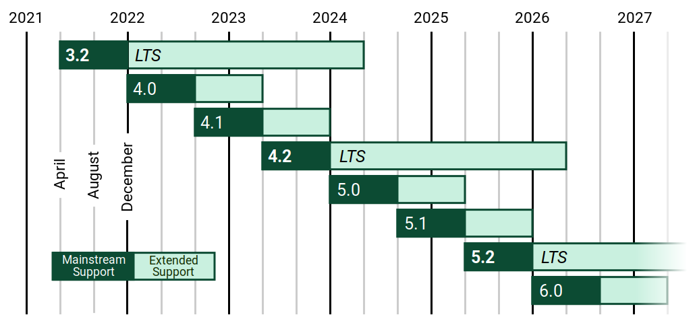
Django 是一个由 Python 编写的一个开放源代码的 Web 应用框架。
使用 Django，只要很少的代码，Python 的程序开发人员就可以轻松地完成一个正式网站所需要的大部分内容，并进一步开发出全功能的 Web 服务。
Django 提供了全栈开发所需的工具，包括数据库 ORM、模板引擎、路由系统、用户认证等，大幅减少重复代码。
Django 的哲学:
Django 遵循 MVC（Model-View-Controller）架构，但在 Django 中更常被称为 MTV（Model-Template-View）。
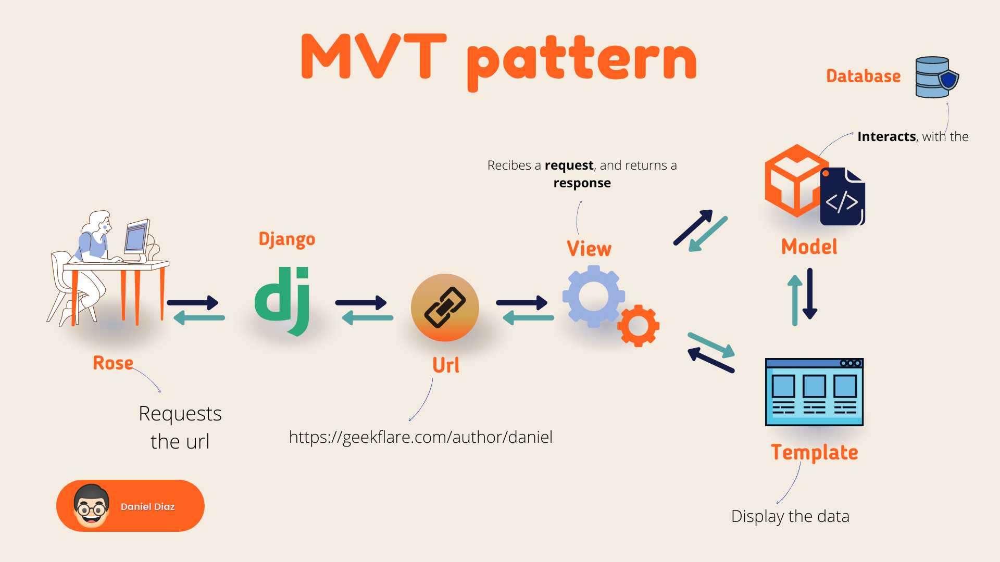
| 功能 | 说明 |
|---|---|
| Admin 后台 | 自动生成管理界面，无需手动编写 CRUD 逻辑。 |
| ORM | 用 Python 类操作数据库，无需写 SQL。 |
| 表单处理 | 内置表单验证，防止 CSRF 攻击。 |
| 用户认证 | 提供登录、注册、权限管理（django.contrib.auth）。 |
| 路由系统 | URL 映射灵活，支持正则表达式。 |
| 缓存机制 | 支持 Memcached、Redis 等后端。 |
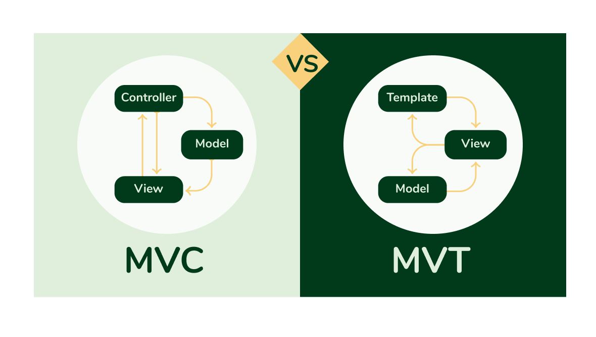
Model (模型)：处理与数据库的交互，定义数据的结构和业务逻辑。
View (视图)：负责数据展示，生成用户看到的 HTML 页面。
Controller (控制器)：接收用户请求，调用 Model 处理数据，并将结果传递给 View 渲染页面。
流程：
用户发送请求到 Controller。
Controller 处理逻辑，调用 Model 获取数据。
Controller 将数据传递给 View。
View 渲染并返回 HTML 页面给用户。
Django 中采用了 MVT 设计模式，类似于 MVC，但有一些区别：
Model (模型)：与数据库交互，处理数据的创建、读取、更新、删除。
Template (模板)：负责页面渲染，生成最终的 HTML 内容。
View (视图)：Django 的 View 更偏向于控制器的角色，接收请求并决定使用哪个模板和数据。
流程：
用户访问 URL，请求被 Django 的 urls.py 映射到相应的 View。
View 处理业务逻辑，调用 Model 获取数据。
View 将数据传递给 Template。
Template 渲染 HTML，最终返回给用户。
适合用 Django 的项目:
不适合的场景:
| 框架 | 特点 |
|---|---|
| Flask | 轻量级，灵活，适合小型项目或微服务。 |
| FastAPI | 异步支持强，适合高性能 API 开发。 |
| Ruby on Rails | 类似 Django，但使用 Ruby 语言。 |
| Laravel | PHP 生态的 MVC 框架，功能与 Django 类似。 |
Django 优势：
在安装 Django 前，系统需要已经安装了 Python 的开发环境。
如果你还没有安装 Python，请先从 Python 官网 https://www.python.org/ 下载并安装最新版本的 Python。
Django 安装也很简单使包管理工具 pip 就可以了：
pip install Django
安装完成后，你可以通过运行以下命令验证 Django 是否成功安装：
python3 -m django --version
如果一切顺利，你将看到安装的 Django 版本号，如：4.2.7。
开发环境推荐：
接下来我们来具体看下不同系统下 Django 的安装。
如果你还未安装Python环境需要先下载Python安装包。
1、Python 下载地址：https://www.python.org/downloads/
2、Django 下载地址：https://www.djangoproject.com/download/
注意：目前 Django 1.6.x 以上版本已经完全兼容 Python 3.x。
安装 Python 你只需要下载 python-x.x.x.msi 文件，然后一直点击 "Next" 按钮即可。
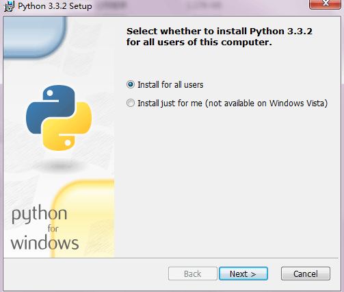
安装完成后你需要设置 Python 环境变量。 右击计算机->属性->高级->环境变量->修改系统变量 path，添加 Python 安装地址，本文实例使用的是 C:\Python33，你需要根据你实际情况来安装。
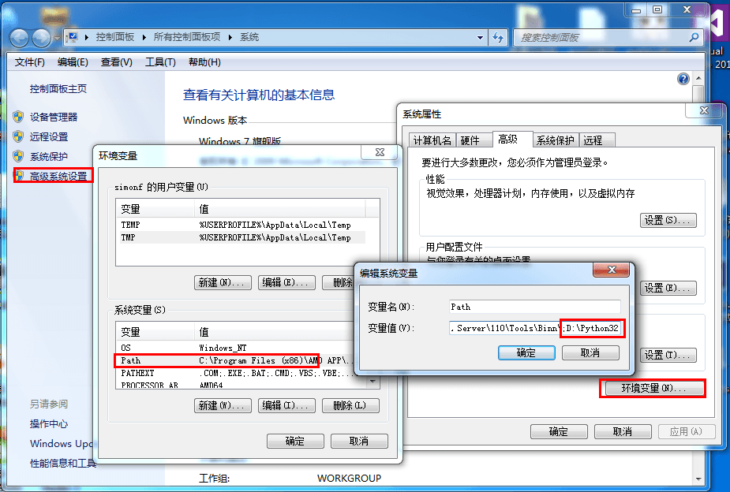
下载 Django 压缩包，解压并和 Python安装目录放在同一个根目录，进入 Django 目录，执行 python setup.py install，然后开始安装，Django 将要被安装到 Python 的 Lib下site-packages。
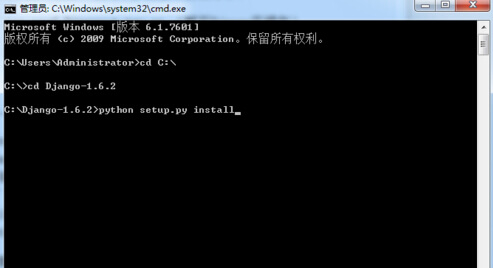
然后是配置环境变量，将这几个目录添加到系统环境变量中： C:\Python33\Lib\site-packages\django;C:\Python33\Scripts。 添加完成后就可以使用Django的django-admin.py命令新建工程了。
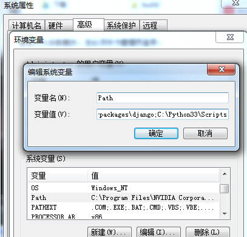
输入以下命令进行检查:
>>> import django >>> django.get_version()
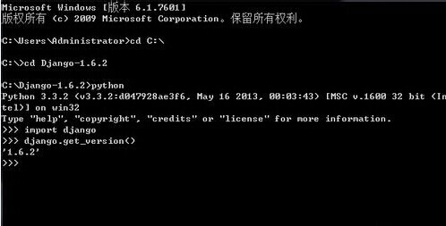
如果输出了Django的版本号说明安装正确。
以下安装位于 Centos Linux 环境下安装，如果是你的 Linux 系统是 ubuntu 请使用 apt-get 命令。
默认情况下 Linux 环境已经支持了Python。你可以在终端输入Python命令来查看是否已经安装。
Python 3.7.4 (default, Aug 1 2012, 05:14:39) [GCC 4.6.3] on linux2 Type "help", "copyright", "credits" or "license" for more information. >>>
命令：
# Python3 安装 yum install python3-setuptools # Python2 安装 yum install python2-setuptools
完成之后，就可以使用 easy_install 命令安装 django
easy_install django
之后我们在 Python 解释器输入以下代码：
[root@solar django]# python Python 3.7.4 (default, May 15 2014, 14:49:08) [GCC 4.8.0] on linux2 Type "help", "copyright", "credits" or "license" for more information. >>> import django >>> django.VERSION (3, 0, 6, 'final', 0)
我们可以看到输出了Django的版本号，说明安装成功。
如果你还未安装 pip 工具，可查看：Python pip 安装与使用。
sudo pip3 install Django -i https://pypi.tuna.tsinghua.edu.cn/simple
-i https://pypi.tuna.tsinghua.edu.cn/simple 指定清华镜像源，下载速度更快。
指定 Django 的下载版本（3.0.6 可以改成你要的版本）：
sudo pip3 install Django==3.0.6 -i https://pypi.tuna.tsinghua.edu.cn/simple
如果 pip < 1.4，安装方法如下：
pip install https://www.djangoproject.com/download/1.11a1/tarball/
下载源码包：https://www.djangoproject.com/download/
输入以下命令并安装：
tar xzvf Django-X.Y.tar.gz # 解压下载包 cd Django-X.Y # 进入 Django 目录 python setup.py install # 执行安装命令
安装成功后 Django 位于 Python 安装目录的 site-packages 目录下。
从这里下载最新的稳定版本：DJango-3.x.y.tar.gz，在页面右侧列表下载，如下图：
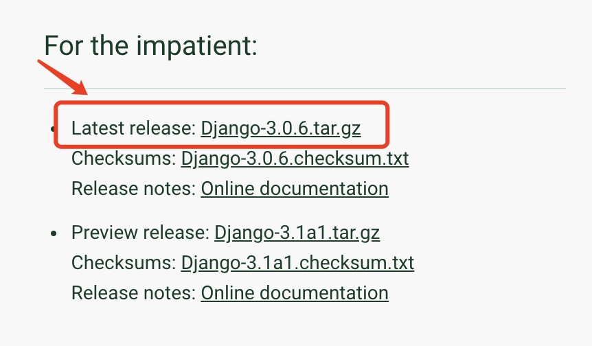
记住是最新的官方版本哦。其中 x.y 是版本号。进入你下载该文件的文件夹目录，执行如下命令:（Mac下默认是/Users/xxx/Downloads，xxx是你的用户名）
$ tar zxvf Django-3.x.y.tar.gz
你也可以从 Github 上下载最新版，地址：https://github.com/django/django：
git clone https://github.com/django/django.git
进入解压后的目录：
cd Django-3.x.y sudo python setup.py install
安装成功后会输出以下信息：
…… Processing dependencies for Django==3.x.y Finished processing dependencies for Django==3.x.y
再进入我们的站点目录，创建 Django 项目：
$ django-admin.py startproject testdj
启动服务：
cd testdj # 切换到我们创建的项目 $ python manage.py runserver …… Starting development server at http://127.0.0.1:8000/ Quit the server with CONTROL-C.
以上信息说明，项目已启动，访问地址为http://127.0.0.1:8000/。
本章我们将介绍 Django 管理工具及如何使用 Django 来创建项目，第一个项目我们以 HelloWorld 来命令项目。
测试版本说明：
Python 3.9.7
Django 4.2.7
通过以下命令可以查看版本号：
# python3 -V Python 3.9.7 # python3 -m django --version 4.2.7
安装 Django 之后，您现在应该已经有了可用的管理工具 django-admin，Windows 如果没有配置环境变量可以用 django-admin。
我们可以来看下django-admin 的命令介绍:
$ django-admin
Type 'django-admin help <subcommand>' for help on a specific subcommand.
Available subcommands:
[django]
check
compilemessages
createcachetable
dbshell
diffsettings
dumpdata
flush
inspectdb
loaddata
makemessages
makemigrations
migrate
runserver
sendtestemail
shell
showmigrations
sqlflush
sqlmigrate
sqlsequencereset
squashmigrations
startapp
startproject
test
testserver
……省略部分……
使用 django-admin 来创建 HelloWorld 项目：
django-admin startproject HelloWorld
创建完成后我们可以查看下项目的目录结构：
$ cd HelloWorld/
$ tree
HelloWorld/ # 项目根目录
├── manage.py # 项目管理脚本
├── db.sqlite3 # SQLite 数据库文件
├── __pycache__/ # Python 字节码缓存
└── HelloWorld/ # 项目配置目录（与项目同名）
├── __init__.py # 包标识文件
├── settings.py # 项目设置
├── urls.py # 主路由配置
├── asgi.py # ASGI 配置
└── wsgi.py # WSGI 配置
项目根目录 (HelloWorld/)：
| 文件/目录 | 作用 |
|---|---|
manage.py | Django 命令行工具入口，用于运行开发服务器、数据库迁移等操作。 |
db.sqlite3 | SQLite 数据库文件（默认数据库，开发环境使用）。 |
__pycache__/ | Python 字节码缓存目录（自动生成，无需手动修改）。 |
主项目配置目录 (HelloWorld/HelloWorld/) ：
| 文件/目录 | 作用 |
|---|---|
__init__.py | 空文件，告诉 Python 该目录是一个包。 |
settings.py | 核心配置文件，包含： - 数据库设置 ( DATABASES)- 静态文件路径 ( STATIC_URL)- 应用注册 ( INSTALLED_APPS)- 调试模式 ( DEBUG=True/False) |
urls.py | 主路由配置文件，定义 URL 路径与视图的映射关系。 |
asgi.py | ASGI 服务器配置（用于异步 Web 服务器，如 Daphne）。 |
wsgi.py | WSGI 服务器配置（用于传统 Web 服务器，如 Gunicorn、uWSGI）。 |
接下来我们进入 HelloWorld 目录输入以下命令，启动服务器：
python3 manage.py runserver 0.0.0.0:8000
0.0.0.0 让其它电脑可连接到开发服务器，8000 为端口号。如果不说明，那么端口号默认为 8000。
在浏览器输入你服务器的 ip（这里我们输入本机 IP 地址： 127.0.0.1:8000） 及端口号，如果正常启动，输出结果如下：
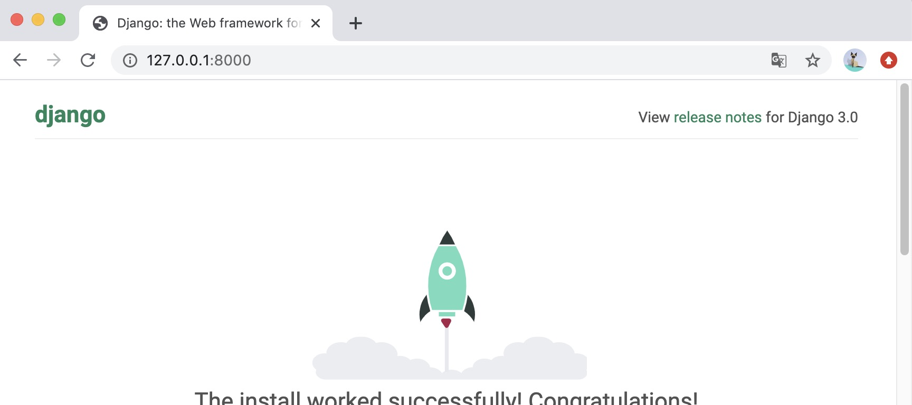
1. settings.py（核心配置）
2. urls.py（路由配置）
3. manage.py（项目管理脚本）
在先前创建的 HelloWorld 目录下的 HelloWorld 目录新建一个 views.py 文件，并输入代码：
接着，绑定 URL 与视图函数。打开 urls.py 文件，删除原来代码，将以下代码复制粘贴到 urls.py 文件中：
整个目录结构如下：
$ tree . |-- HelloWorld | |-- __init__.py | |-- __init__.pyc | |-- settings.py | |-- settings.pyc | |-- urls.py # url 配置 | |-- urls.pyc | |-- views.py # 添加的视图文件 | |-- views.pyc # 编译后的视图文件 | |-- wsgi.py | `-- wsgi.pyc `-- manage.py
完成后，启动 Django 开发服务器，并在浏览器访问打开浏览器并访问：
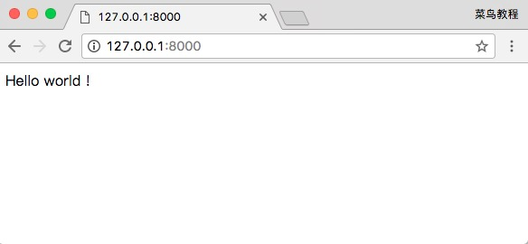
我们也可以修改以下规则：
通过浏览器打开 http://127.0.0.1:8000/hello，输出结果如下：
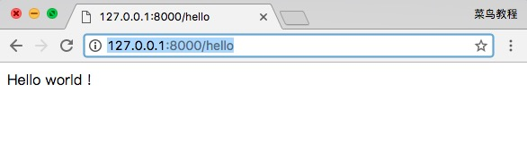
注意：项目中如果代码有改动，服务器会自动监测代码的改动并自动重新载入，所以如果你已经启动了服务器则不需手动重启。
Django path() 可以接收四个参数，分别是两个必选参数：route、view 和两个可选参数：kwargs、name。
语法格式：path(route, view, kwargs=None, name=None)
route： 字符串，定义 URL 的路径部分。可以包含变量，例如 <int:my_variable>，以从 URL 中捕获参数并将其传递给视图函数。
view： 视图函数，处理与给定路由匹配的请求。可以是一个函数或一个基于类的视图。
kwargs（可选）： 一个字典，包含传递给视图函数的额外关键字参数。
name（可选）： 为 URL 路由指定一个唯一的名称，以便在代码的其他地方引用它。这对于在模板中生成 URL 或在代码中进行重定向等操作非常有用。
Django2. 0中可以使用 re_path() 方法来兼容 1.x 版本中的 url() 方法，一些正则表达式的规则也可以通过 re_path() 来实现 。
from django.urls import include, re_path
urlpatterns = [
re_path(r'^index/$', views.index, name='index'),
re_path(r'^bio/(?P<username>\w+)/$', views.bio, name='bio'),
re_path(r'^weblog/', include('blog.urls')),
...
]
django-admin 是 Django 框架提供的一个命令行工具，它是管理 Django 项目的核心工具。
无论是创建新项目、运行开发服务器，还是执行数据库迁移，django-admin 都是不可或缺的工具。
要查看 django-admin 提供的所有命令，可以运行：
django-admin help
输出内容类似如下：
Type 'django-admin help <subcommand>' for help on a specific subcommand.
Available subcommands:
[django]
check
compilemessages
createcachetable
dbshell
diffsettings
dumpdata
flush
inspectdb
loaddata
makemessages
makemigrations
migrate
optimizemigration
runserver
sendtestemail
shell
showmigrations
sqlflush
sqlmigrate
sqlsequencereset
squashmigrations
startapp
startproject
test
testserver
django-admin startproject 项目名称
这个命令会在当前目录下创建一个新的 Django 项目，包含基本的项目结构：
manage.py：项目管理脚本项目名称/：项目主目录__init__.pysettings.py：项目设置文件urls.py：URL 路由配置wsgi.py：WSGI 应用入口虽然通常使用 manage.py 来创建应用，但也可以通过 django-admin：
django-admin startapp 应用名称
这会创建一个新的 Django 应用，包含：
migrations/：数据库迁移文件目录__init__.pyadmin.py：管理后台配置apps.py：应用配置models.py：数据模型定义tests.py：测试代码views.py：视图函数django-admin check
这个命令会检查你的 Django 项目是否有配置错误，包括：
Django 使用迁移系统来管理数据库模式变更：
django-admin makemigrations # 创建迁移文件 django-admin migrate # 应用迁移到数据库
django-admin createsuperuser
这个命令会引导你创建一个可以访问 Django 管理后台的超级用户。
| 命令 | 作用 | 示例 |
|---|---|---|
startproject | 创建一个新 Django 项目 | django-admin startproject myproject |
startapp | 创建一个新 Django 应用 | django-admin startapp myapp |
runserver | 启动开发服务器 | python manage.py runserver |
makemigrations | 生成数据库迁移文件 | python manage.py makemigrations |
migrate | 执行数据库迁移 | python manage.py migrate |
createsuperuser | 创建管理员账号 | python manage.py createsuperuser |
shell | 启动 Django 交互式 Shell | python manage.py shell |
collectstatic | 收集静态文件（用于生产环境） | python manage.py collectstatic |
test | 运行单元测试 | python manage.py test |
基本语法:
django-admin startproject <项目名称> [目标目录]
参数说明:
| 参数 | 作用 | 示例 |
|---|---|---|
<项目名称> | 必填，项目名称（会生成同名目录） | django-admin startproject mysite |
[目标目录] | 可选，指定项目存放目录 | django-admin startproject mysite /opt/myproject |
--template | 使用自定义项目模板 | django-admin startproject --template=my_template.zip mysite |
--extension | 指定文件扩展名（如 .py, .txt） | django-admin startproject --extension=py,txt mysite |
--name | 指定文件名模式（如 Dockerfile, README.md） | django-admin startproject --name=Dockerfile mysite |
基本语法:
django-admin startapp <应用名称> [目标目录]
参数说明:
| 参数 | 作用 | 示例 |
|---|---|---|
<应用名称> | 必填，应用名称（会生成 models.py, views.py 等） | django-admin startapp blog |
[目标目录] | 可选，指定应用存放目录 | django-admin startapp blog /opt/myapp |
--template | 使用自定义应用模板 | django-admin startapp --template=my_app_template.zip blog |
基本语法:
python manage.py runserver [IP:端口]
参数说明:
| 参数 | 作用 | 示例 |
|---|---|---|
[IP:端口] | 可选，指定监听的 IP 和端口（默认 127.0.0.1:8000） | python manage.py runserver 0.0.0.0:8080 |
--noreload | 禁用自动重载（调试时使用） | python manage.py runserver --noreload |
--insecure | 强制静态文件服务（非 DEBUG 模式） | python manage.py runserver --insecure |
基本语法:
python manage.py migrate [应用名] [迁移版本]
参数说明:
| 参数 | 作用 | 示例 |
|---|---|---|
[应用名] | 可选，指定要迁移的应用 | python manage.py migrate blog |
[迁移版本] | 可选，指定迁移版本号 | python manage.py migrate blog 0002 |
--fake | 标记迁移为已执行（不实际修改数据库） | python manage.py migrate --fake |
--fake-initial | 仅当表已存在时标记为已执行 | python manage.py migrate --fake-initial |
| 命令 | 作用 | 示例 |
|---|---|---|
createsuperuser | 创建管理员用户 | python manage.py createsuperuser |
shell | 进入 Django Shell（带 ORM 支持） | python manage.py shell |
test | 运行测试用例 | python manage.py test blog |
collectstatic | 收集静态文件（生产环境部署） | python manage.py collectstatic |
通过理解 Django 的项目结构，我们可以更高效地组织代码，遵循 Django 的最佳实践，构建可维护的 Web 应用程序。
上一章节我们已经学会使用django-admin startproject 命令创建一个新项目时，Django 会自动生成以下基础结构：
myproject/
│
├── manage.py
└── myproject/
├── __init__.py
├── settings.py
├── urls.py
└── wsgi.py
使用 django-admin 来创建 HelloWorld 项目：
django-admin startproject HelloWorld
创建完成后我们可以查看下项目的目录结构：
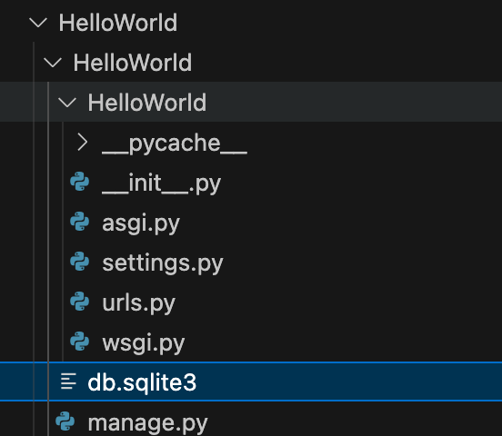
| 文件/目录 | 详细说明 |
|---|---|
manage.py | Django 项目的命令行管理工具，封装了 django-admin 的功能，并自动设置 DJANGO_SETTINGS_MODULE 环境变量指向当前项目的配置。所有项目管理命令都通过它执行，如：- runserver：启动开发服务器- makemigrations：生成数据库迁移文件- shell：启动带 ORM 的 Python shell |
db.sqlite3 | Django 默认使用的 SQLite 数据库文件，在首次执行 migrate 命令后自动生成。开发环境适用，生产环境建议换用 PostgreSQL/MySQL。文件位置由 settings.py 中的 DATABASES['default']['NAME'] 定义。 |
__pycache__/ | Python 解释器生成的字节码缓存目录，包含 .pyc 文件，用于加速模块加载。无需提交到版本控制（应在 .gitignore 中忽略）。 |
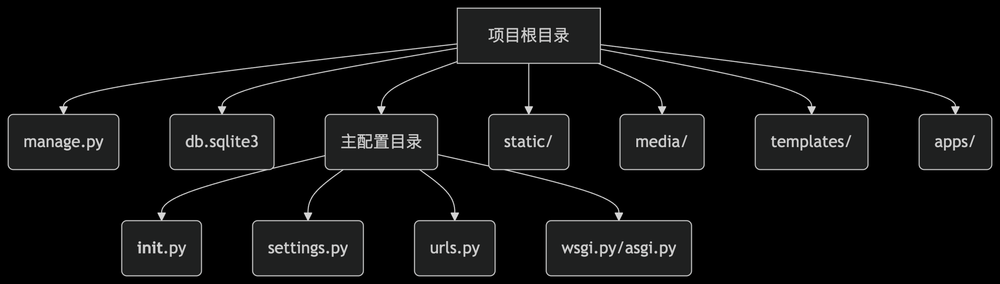
manage.py 是 Django 项目的命令行工具入口，它提供了许多有用的命令：
常用命令示例：
python manage.py runserver - 启动开发服务器python manage.py migrate - 应用数据库迁移python manage.py createsuperuser - 创建管理员账户settings.py 是 Django 项目的配置文件，包含所有重要的设置：
| 文件 | 用途 |
|---|---|
wsgi.py | WSGI（Web Server Gateway Interface）配置，用于传统同步服务器（如 Gunicorn、uWSGI）。生产环境通过此文件启动项目。 |
asgi.py | ASGI（Asynchronous Server Gateway Interface）配置，支持异步服务器（如 Daphne、Uvicorn）。用于 WebSocket 或异步视图。 |
HelloWorld/ ├── apps/ # 推荐：存放所有自定义应用 │ └── blog/ # 示例应用 ├── static/ # 静态文件（CSS/JS/图片） ├── media/ # 用户上传文件 ├── templates/ # 全局模板目录 └── requirements.txt # 项目依赖列表
将应用集中管理，避免散落在项目根目录。
需在 settings.py 中配置 Python 路径：
import sys sys.path.insert(0, os.path.join(BASE_DIR, 'apps'))
static/：存放 CSS、JavaScript、图片等，通过 STATIC_URL 访问。
media/：用户上传的文件（如头像），通过 MEDIA_URL 访问。需配置服务器在开发时提供访问：
# urls.py（仅开发环境） from django.conf import settings from django.conf.urls.static import static urlpatterns += static(settings.MEDIA_URL, document_root=settings.MEDIA_ROOT)
在 Django 中，一个项目可以包含多个应用。使用 python manage.py startapp myapp 创建一个新应用后，会生成以下结构：
myapp/ │ ├── migrations/ │ └── __init__.py ├── __init__.py ├── admin.py ├── apps.py ├── models.py ├── tests.py └── views.py
定义数据模型，与数据库表对应：
处理业务逻辑，返回响应：
配置 Django 管理后台：
一个典型的 Django 项目完整结构如下：
myproject/
│
├── manage.py
├── requirements.txt
├── static/
│ ├── css/
│ ├── js/
│ └── images/
├── media/
├── templates/
│ └── base.html
└── myproject/
├── __init__.py
├── settings.py
├── urls.py
├── wsgi.py
└── asgi.py
└── myapp1/
├── migrations/
├── templates/
│ └── myapp1/
├── __init__.py
├── admin.py
├── apps.py
├── models.py
├── tests.py
├── urls.py
└── views.py
└── myapp2/
└── ... (类似结构)
存储数据库迁移文件，Django 使用这些文件来跟踪模型变更并同步到数据库。
存放静态文件（CSS, JavaScript, 图片等），在部署时会收集到指定位置。
存放 HTML 模板文件，Django 使用模板语言动态生成页面。
存储用户上传的文件，需要在 settings.py 中配置：
STATICFILES_DIRS，生产时使用 collectstatic| 文件/配置 | 开发环境 | 生产环境 |
|---|---|---|
DEBUG | True（显示错误详情） | False（隐藏错误，记录到日志） |
| 数据库 | SQLite（默认） | PostgreSQL/MySQL（性能优化） |
| 静态文件 | runserver 自动服务 | 使用 collectstatic 收集到 CDN |
ALLOWED_HOSTS | 空列表或 ['localhost'] | 必须配置域名（如 ['example.com']） |
Django 的模板系统（Template System）是用于将业务逻辑（Python）与展示层（HTML）分离的核心组件，它允许开发者通过简单的标签和变量动态生成 HTML 页面。
在上一章节中我们使用 django.http.HttpResponse() 来输出 "Hello World！"，该方式将数据与视图混合在一起，不符合 Django 的 MVT 思想。
本章节我们将为大家详细介绍 Django 模板的应用，模板是一个文本，用于分离文档的表现形式和内容。
| 功能 | 语法/示例 | 适用场景 |
|---|---|---|
| 变量渲染 | {{ variable }} | 动态显示数据 |
| 逻辑控制 | {% if %}, {% for %} | 条件/循环渲染 |
| 模板继承 | {% extends %}, {% block %} | 避免重复 HTML 结构 |
| 静态文件 | {% static 'path' %} | 加载 CSS/JS/图片 |
| 自定义过滤器 | @register.filter | 扩展模板功能 |
我们接着上一章节的项目将在 HelloWorld 目录底下创建 templates 目录并建立 runoob.html文件，整个目录结构如下：
HelloWorld/
|-- HelloWorld
| |-- __init__.py
| |-- __init__.pyc
| |-- settings.py
| |-- settings.pyc
| |-- urls.py
| |-- urls.pyc
| |-- views.py
| |-- views.pyc
| |-- wsgi.py
| `-- wsgi.pyc
|-- manage.py
`-- templates
`-- runoob.html
runoob.html 文件代码如下：
从模板中我们知道变量使用了双括号 {{ }}。
接下来我们需要向 Django 说明模板文件的路径，打开 HelloWorld/HelloWorld/settings.py 文件，修改 TEMPLATES 中的 DIRS 为 [BASE_DIR / "templates"]，如下所示:
我们现在修改 views.py，增加一个新的对象，用于向模板提交数据：
可以看到，我们这里使用 render 来替代之前使用的 HttpResponse,render 还使用了一个字典 context 作为参数。
context 字典中元素的键值 hello 对应了模板中的变量 {{ hello }}。
接下来我们进入 HelloWorld 目录输入以下命令，启动服务器：
python3 manage.py runserver 0.0.0.0:8000
再次访问 http://127.0.0.1:8000/runoob，可以看到页面：
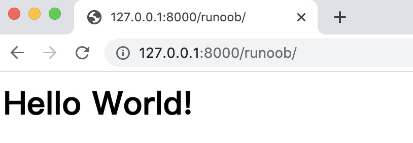
这样我们就完成了使用模板来输出数据，从而实现数据与视图分离。
接下来我们将具体介绍模板中常用的语法规则。
语法：
{% tag %}
控制模板逻辑，常用标签：
| 标签 | 用途 |
|---|---|
{% for %} | 循环遍历列表/字典 |
{% if %} | 条件判断 |
{% extends %} | 继承基模板 |
{% block %} | 定义可被子模板覆盖的内容块 |
{% include %} | 嵌入其他模板片段 |
{% url %} | 反向解析 URL（避免硬编码路径） |
{% csrf_token %} | 生成 CSRF 令牌（用于 POST 表单） |
模板语法：
view：｛"HTML变量名" : "views变量名"｝ HTML：｛｛变量名｝｝
templates 中的 runoob.html ：
<p>{{ name }}</p>
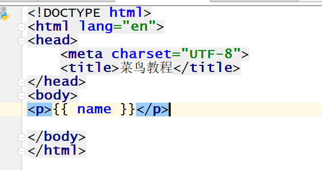
再次访问 http://127.0.0.1:8000/runoob，可以看到页面：
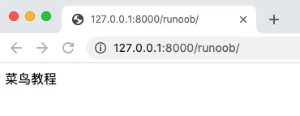
templates 中的 runoob.html中，可以用 . 索引下标取出对应的元素。
再次访问 http://127.0.0.1:8000/runoob，可以看到页面：
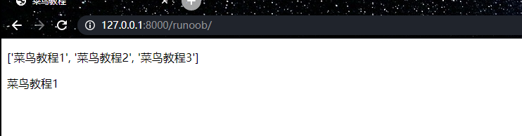
templates 中的 runoob.html中，可以用 .键 取出对应的值。
再次访问 http://127.0.0.1:8000/runoob，可以看到页面：
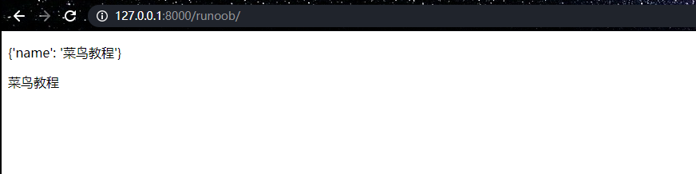
{{ 变量名 | 过滤器：可选参数 }}
模板过滤器可以在变量被显示前修改它，过滤器使用管道字符，如下所示：
{{ name|lower }}
{{ name }} 变量被过滤器 lower 处理后，文档大写转换文本为小写。
过滤管道可以被* 套接* ，既是说，一个过滤器管道的输出又可以作为下一个管道的输入：
{{ my_list|first|upper }}
以上实例将第一个元素并将其转化为大写。
有些过滤器有参数。 过滤器的参数跟随冒号之后并且总是以双引号包含。 例如：
{{ bio|truncatewords:"30" }}
这个将显示变量 bio 的前30个词。
其他过滤器：
{{ pub_date|date:"F j, Y" }}default
default 为变量提供一个默认值。
如果 views 传的变量的布尔值是 false，则使用指定的默认值。
以下值为 false：
0 0.0 False 0j "" [] () set() {} None
再次访问 http://127.0.0.1:8000/runoob，可以看到页面：
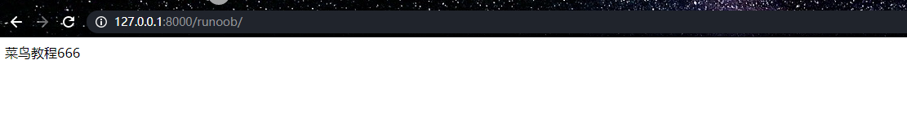
length
返回对象的长度，适用于字符串和列表。
字典返回的是键值对的数量，集合返回的是去重后的长度。
再次访问 http://127.0.0.1:8000/runoob，可以看到页面：
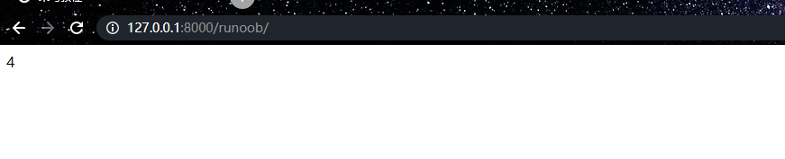
filesizeformat
以更易读的方式显示文件的大小（即'13 KB', '4.1 MB', '102 bytes'等）。
字典返回的是键值对的数量，集合返回的是去重后的长度。
再次访问 http://127.0.0.1:8000/runoob，可以看到页面：
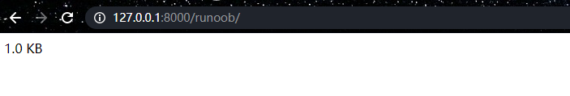
date
根据给定格式对一个日期变量进行格式化。
格式 Y-m-d H:i:s返回 年-月-日 小时:分钟:秒 的格式时间。
再次访问 http://127.0.0.1:8000/runoob，可以看到页面：
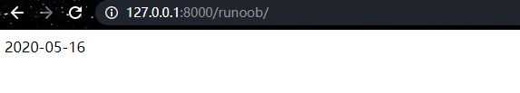
truncatechars
如果字符串包含的字符总个数多于指定的字符数量，那么会被截断掉后面的部分。
截断的字符串将以 ... 结尾。
再访问访问 http://127.0.0.1:8000/runoob，可以看到页面：
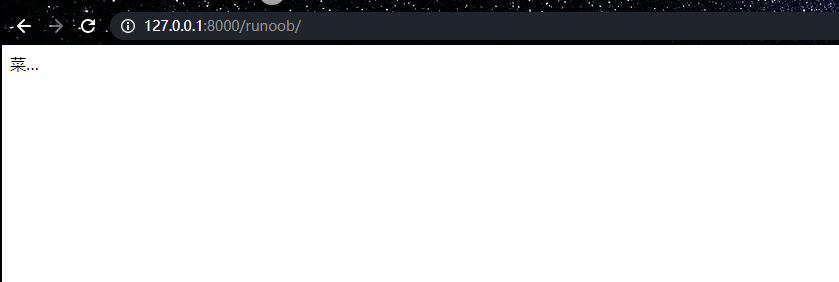
safe
将字符串标记为安全，不需要转义。
要保证 views.py 传过来的数据绝对安全，才能用 safe。
和后端 views.py 的 mark_safe 效果相同。
Django 会自动对 views.py 传到HTML文件中的标签语法进行转义，令其语义失效。加 safe 过滤器是告诉 Django 该数据是安全的，不必对其进行转义，可以让该数据语义生效。
再访问访问 http://127.0.0.1:8000/runoob，可以看到页面：
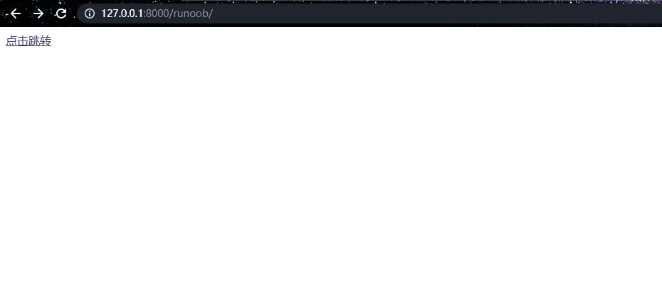
基本语法格式如下：
{% if condition %}
... display
{% endif %}
或者：
{% if condition1 %}
... display 1
{% elif condition2 %}
... display 2
{% else %}
... display 3
{% endif %}
根据条件判断是否输出。if/else 支持嵌套。
{% if %} 标签接受 and ， or 或者 not 关键字来对多个变量做判断 ，或者对变量取反（ not )，例如：
{% if athlete_list and coach_list %}
athletes 和 coaches 变量都是可用的。
{% endif %}
再访问访问 http://127.0.0.1:8000/runoob，可以看到页面：
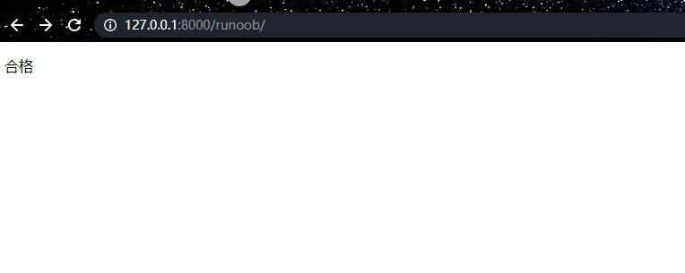
{% for %} 允许我们在一个序列上迭代。
与 Python 的 for 语句的情形类似，循环语法是 for X in Y ，Y 是要迭代的序列而 X 是在每一个特定的循环中使用的变量名称。
每一次循环中，模板系统会渲染在 {% for %} 和 {% endfor %} 之间的所有内容。
例如，给定一个运动员列表 athlete_list 变量，我们可以使用下面的代码来显示这个列表：
<ul>
{% for athlete in athlete_list %}
<li>{{ athlete.name }}</li>
{% endfor %}
</ul>
再访问访问 http://127.0.0.1:8000/runoob，可以看到页面：
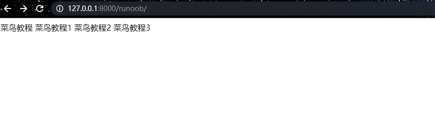
给标签增加一个 reversed 使得该列表被反向迭代：
{% for athlete in athlete_list reversed %}
...
{% endfor %}
再访问访问 http://127.0.0.1:8000/runoob，可以看到页面：
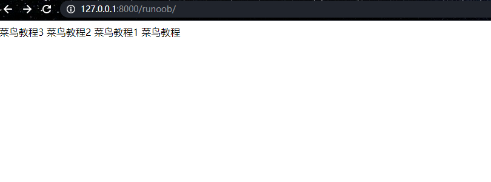
遍历字典: 可以直接用字典 .items 方法，用变量的解包分别获取键和值。
再访问访问 http://127.0.0.1:8000/runoob，可以看到页面：
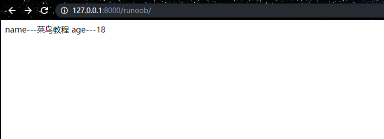
在 {% for %} 标签里可以通过 {{forloop}} 变量获取循环序号。再访问访问 http://127.0.0.1:8000/runoob，可以看到页面：
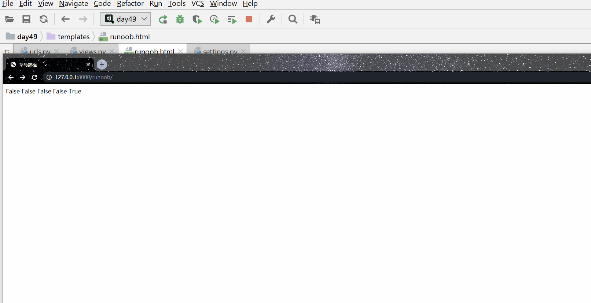
{% empty %}
可选的 {% empty %} 从句：在循环为空的时候执行（即 in 后面的参数布尔值为 False ）。
再访问访问 http://127.0.0.1:8000/runoob，可以看到页面：
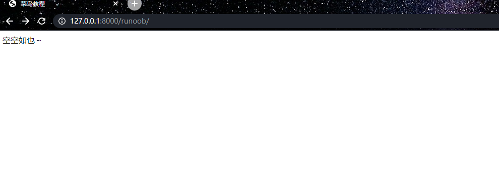
可以嵌套使用 {% for %} 标签：
{% for athlete in athlete_list %}
<h1>{{ athlete.name }}</h1>
<ul>
{% for sport in athlete.sports_played %}
<li>{{ sport }}</li>
{% endfor %}
</ul>
{% endfor %}
Django 注释使用 {# #}。
{# 这是一个注释 #}
{% include %} 标签允许在模板中包含其它的模板的内容。
下面这个例子都包含了 nav.html 模板：
{% include "nav.html" %}
csrf_token 用于form表单中，作用是跨站请求伪造保护。
如果不用 {% csrf_token %} 标签，在用 form 表单时，要再次跳转页面会报 403 权限错误。
用了{% csrf_token %} 标签，在 form 表单提交数据时，才会成功。
解析：
首先，向服务器发送请求，获取登录页面，此时中间件 csrf 会自动生成一个隐藏input标签，该标签里的 value 属性的值是一个随机的字符串，用户获取到登录页面的同时也获取到了这个隐藏的input标签。
然后，等用户需要用到form表单提交数据的时候，会携带这个 input 标签一起提交给中间件 csrf，原因是 form 表单提交数据时，会包括所有的 input 标签，中间件 csrf 接收到数据时，会判断，这个随机字符串是不是第一次它发给用户的那个，如果是，则数据提交成功，如果不是，则返回403权限错误。
1、在应用目录下创建 templatetags 目录(与 templates 目录同级，目录名只能是 templatetags)。
HelloWorld/ |-- HelloWorld | |-- __init__.py | |-- __init__.pyc | |-- settings.py ... |-- manage.py `-- templatetags `-- templates
2、在 templatetags 目录下创建任意 py 文件，如：my_tags.py。
3、my_tags.py 文件代码如下：
from django import template register = template.Library() #register的名字是固定的,不可改变
修改 settings.py 文件的 TEMPLATES 选项配置，添加 libraries 配置：
4、利用装饰器 @register.filter 自定义过滤器。
注意：装饰器的参数最多只能有 2 个。
@register.filter
def my_filter(v1, v2):
return v1 * v2
5、利用装饰器 @register.simple_tag 自定义标签。
@register.simple_tag
def my_tag1(v1, v2, v3):
return v1 * v2 * v3
6、在使用自定义标签和过滤器前，要在 html 文件 body 的最上方中导入该 py 文件。
{% load my_tags %}7、在 HTML 中使用自定义过滤器。
{{ 11|my_filter:22 }}
8、在 HTML 中使用自定义标签。
{% my_tag1 11 22 33 %}
9、语义化标签
在该 py 文件中导入 mark_safe。
from django.utils.safestring import mark_safe
定义标签时，用上 mark_safe 方法，令标签语义化，相当于 jQuery 中的 html() 方法。
和前端HTML文件中的过滤器 safe 效果一样。
@register.simple_tag
def my_html(v1, v2):
temp_html = "<input type='text' id='%s' class='%s' />" %(v1, v2)
return mark_safe(temp_html)
在HTML中使用该自定义标签，在页面中动态创建标签。
{% my_html "zzz" "xxx" %}
1、在项目根目录下创建 statics 目录。
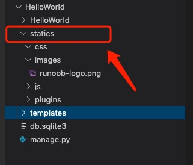
2、在 settings 文件的最下方配置添加以下配置：
STATIC_URL = '/static/' # 别名
STATICFILES_DIRS = [
os.path.join(BASE_DIR, "statics"),
]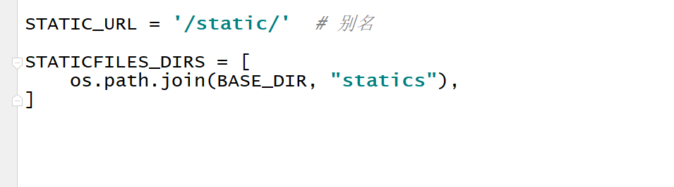
3、在 statics 目录下创建 css 目录，js 目录，images 目录，plugins 目录， 分别放 css文件，js文件，图片，插件。
4、把 bootstrap 框架放入插件目录 plugins。
5、在 HTML 文件的 head 标签中引入 bootstrap。
注意：此时引用路径中的要用配置文件中的别名 static，而不是目录 statics。
<link rel="stylesheet" href="/static/plugins/bootstrap-3.3.7/dist/css/bootstrap.css">
在模板中使用需要加入 {% load static %} 代码，以下实例我们从静态目录中引入图片。
再访问访问 http://127.0.0.1:8000/runoob，可以看到页面：
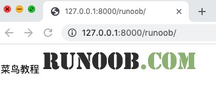
模板可以用继承的方式来实现复用，减少冗余内容。
网页的头部和尾部内容一般都是一致的，我们就可以通过模板继承来实现复用。
父模板用于放置可重复利用的内容，子模板继承父模板的内容，并放置自己的内容。
标签 block...endblock: 父模板中的预留区域，该区域留给子模板填充差异性的内容，不同预留区域名字不能相同。
{% block 名称 %}
预留给子模板的区域，可以设置设置默认内容
{% endblock 名称 %}
子模板使用标签 extends 继承父模板：
{% extends "父模板路径"%}
子模板如果没有设置父模板预留区域的内容，则使用在父模板设置的默认内容，当然也可以都不设置，就为空。
子模板设置父模板预留区域的内容：
{ % block 名称 % }
内容
{% endblock 名称 %}
接下来我们先创建之前项目的 templates 目录中添加 base.html 文件，代码如下：
以上代码中，名为 mainbody 的 block 标签是可以被继承者们替换掉的部分。
所有的 {% block %} 标签告诉模板引擎，子模板可以重载这些部分。
runoob.html 中继承 base.html，并替换特定 block，runoob.html 修改后的代码如下：
第一行代码说明 runoob.html 继承了 base.html 文件。可以看到，这里相同名字的 block 标签用以替换 base.html 的相应 block。
重新访问地址 http://127.0.0.1:8000/runoob，输出结果如下：
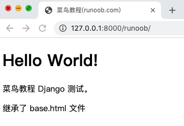
Django 对各种数据库提供了很好的支持，包括：PostgreSQL、MySQL、SQLite、Oracle。
Django 为这些数据库提供了统一的调用API。 我们可以根据自己业务需求选择不同的数据库。
MySQL 是 Web 应用中最常用的数据库。本章节我们将以 Mysql 作为实例进行介绍。你可以通过本站的 MySQL 教程 了解更多 MySQL 的基础知识。
如果你没安装 mysql 驱动，可以执行以下命令安装：
sudo pip3 install pymysql
Django 模型使用自带的 ORM。
对象关系映射（Object Relational Mapping，简称 ORM ）用于实现面向对象编程语言里不同类型系统的数据之间的转换。
ORM 在业务逻辑层和数据库层之间充当了桥梁的作用。
ORM 是通过使用描述对象和数据库之间的映射的元数据，将程序中的对象自动持久化到数据库中。
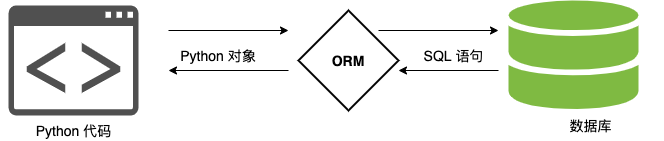
使用 ORM 的好处：
使用 ORM 的缺点：
ORM 解析过程:
ORM 对应关系表：
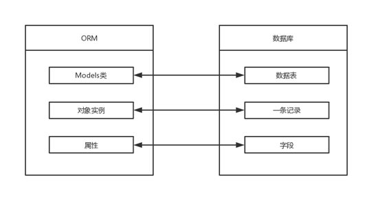
创建 MySQL 数据库( ORM 无法操作到数据库级别，只能操作到数据表)语法：
create database 数据库名称 default charset=utf8; # 防止编码问题，指定为 utf8
例如我们创建一个名为 runoob 数据库，编码指定为 utf8：
create database runoob default charset=utf8;
我们在项目的 settings.py 文件中找到 DATABASES 配置项，将其信息修改为：
如果你使用了 Python2.x 版本这里添加了中文注释，所以你需要在 HelloWorld/settings.py 文件头部添加 # -*- coding: UTF-8 -*-。
上面包含数据库名称和用户的信息，它们与 MySQL 中对应数据库和用户的设置相同。Django 根据这一设置，与 MySQL 中相应的数据库和用户连接起来。
接下来，告诉 Django 使用 pymysql 模块连接 mysql 数据库：
Django 规定，如果要使用模型，必须要创建一个 app。我们使用以下命令创建一个 TestModel 的 app:
django-admin startapp TestModel
目录结构如下：
HelloWorld |-- HelloWorld |-- manage.py ... |-- TestModel | |-- __init__.py | |-- admin.py | |-- models.py | |-- tests.py | `-- views.py
我们修改 TestModel/models.py 文件，代码如下：
以上的类名代表了数据库表名，且继承了models.Model，类里面的字段代表数据表中的字段(name)，数据类型则由CharField（相当于varchar）、DateField（相当于datetime）， max_length 参数限定长度。
接下来在 settings.py 中找到INSTALLED_APPS这一项，如下：
INSTALLED_APPS = (
'django.contrib.admin',
'django.contrib.auth',
'django.contrib.contenttypes',
'django.contrib.sessions',
'django.contrib.messages',
'django.contrib.staticfiles',
'TestModel', # 添加此项
)
在命令行中运行：
$ python3 manage.py migrate # 创建表结构 $ python3 manage.py makemigrations TestModel # 让 Django 知道我们在我们的模型有一些变更 $ python3 manage.py migrate TestModel # 创建表结构
看到几行 "Creating table…" 的字样，你的数据表就创建好了。
Creating tables ... …… Creating table TestModel_test #我们自定义的表 ……
表名组成结构为：应用名_类名（如：TestModel_test）。
注意：尽管我们没有在 models 给表设置主键，但是 Django 会自动添加一个 id 作为主键。
如果执行以上命令时会出现如下报错信息:
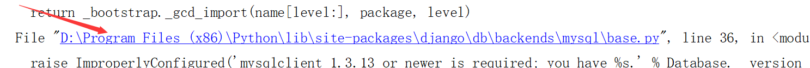
原因是 MySQLclient 目前只支持到 Python3.4，因此如果使用的更高版本的 python，需要修改如下：
通过报错信息的文件路径找到 ...site-packages\Django-2.0-py3.6.egg\django\db\backends\mysql 这个路径里的 base.py 文件，把这两行代码注释掉（代码在文件开头部分）：
if version < (1, 3, 13):
raise ImproperlyConfigured('mysqlclient 1.3.13 or newer is required; you have %s.' % Database.__version__)
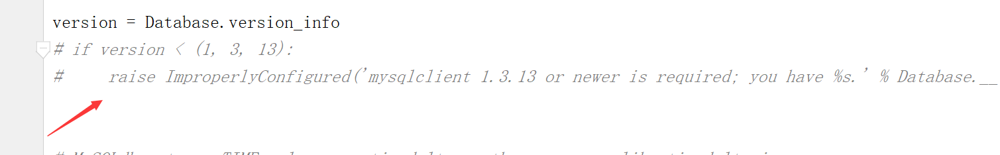
一般点报错的代码文件路径信息，会自动跳转到报错文件中行数，此时我们在报错的代码行数注释掉。
如果出现以下报错信息:
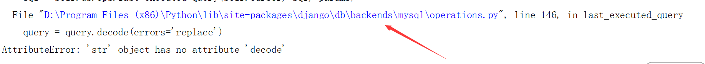
我们点报错的代码文件路径，跳转到报错文件中行数，此时我们在报错的代码行数之前加上:
query = query.encode()
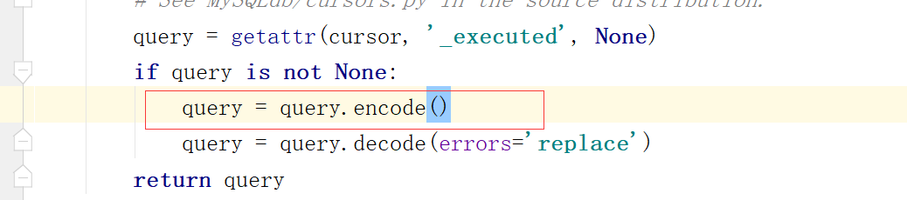
接下来我们在 HelloWorld 目录中添加 testdb.py 文件（下面介绍），并修改 urls.py：
添加数据需要先创建对象，然后再执行 save 函数，相当于SQL中的INSERT：
访问 http://127.0.0.1:8000/testdb 就可以看到数据添加成功的提示。
输出结果如下：
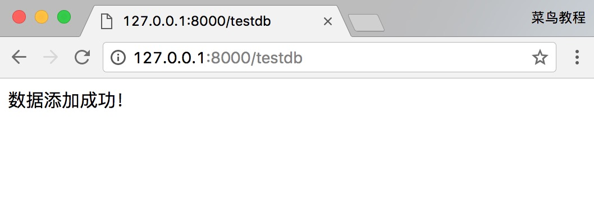
Django提供了多种方式来获取数据库的内容，如下代码所示：
修改数据可以使用 save() 或 update():
删除数据库中的对象只需调用该对象的delete()方法即可：
HTML表单是网站交互性的经典方式。 本章将介绍如何用Django对用户提交的表单数据进行处理。
HTTP协议以"请求－回复"的方式工作。客户发送请求时，可以在请求中附加数据。服务器通过解析请求，就可以获得客户传来的数据，并根据URL来提供特定的服务。
我们在之前的项目中创建一个 search.py 文件，用于接收用户的请求：
在模板目录 templates 中添加 search_form.html 表单：
urls.py 规则修改为如下形式：
访问地址 http://127.0.0.1:8000/search-form/ 并搜索，结果如下所示:
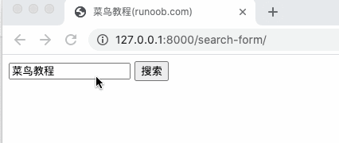
上面我们使用了 GET 方法，视图显示和请求处理分成两个函数处理。
提交数据时更常用 POST 方法。我们下面使用该方法，并用一个URL和处理函数，同时显示视图和处理请求。
我们在 templates 创建 post.html：
在模板的末尾，我们增加一个 rlt 记号，为表格处理结果预留位置。
表格后面还有一个 {% csrf_token %} 的标签。csrf 全称是 Cross Site Request Forgery。这是 Django 提供的防止伪装提交请求的功能。POST 方法提交的表格，必须有此标签。
在HelloWorld目录下新建 search2.py 文件并使用 search_post 函数来处理 POST 请求：
urls.py 规则修改为如下形式：
访问 http://127.0.0.1:8000/search-post/ 显示结果如下：
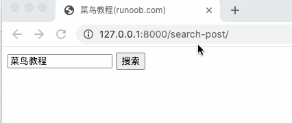
完成以上实例后，我们的目录结构为：
HelloWorld
|-- HelloWorld
| |-- __init__.py
| |-- __init__.pyc
| |-- search.py
| |-- search.pyc
| |-- search2.py
| |-- search2.pyc
| |-- settings.py
| |-- settings.pyc
| |-- testdb.py
| |-- testdb.pyc
| |-- urls.py
| |-- urls.pyc
| |-- views.py
| |-- views.pyc
| |-- wsgi.py
| `-- wsgi.pyc
|-- TestModel
| |-- __init__.py
| |-- __init__.pyc
| |-- admin.py
| |-- admin.pyc
| |-- apps.py
| |-- migrations
| | |-- 0001_initial.py
| | |-- 0001_initial.pyc
| | |-- __init__.py
| | `-- __init__.pyc
| |-- models.py
| |-- models.pyc
| |-- tests.py
| `-- views.py
|-- db.sqlite3
|-- manage.py
`-- templates
|-- base.html
|-- hello.html
|-- post.html
`-- search_form.html
每个视图函数的第一个参数是一个 HttpRequest 对象，就像下面这个 runoob() 函数:
from django.http import HttpResponse
def runoob(request):
return HttpResponse("Hello world")
HttpRequest对象包含当前请求URL的一些信息：
|
属性 |
描述 |
|
path |
请求页面的全路径,不包括域名—例如, "/hello/"。 |
|
method |
请求中使用的HTTP方法的字符串表示。全大写表示。例如: if request.method == 'GET': |
|
GET |
包含所有HTTP GET参数的类字典对象。参见QueryDict 文档。 |
|
POST |
包含所有HTTP POST参数的类字典对象。参见QueryDict 文档。 服务器收到空的POST请求的情况也是有可能发生的。也就是说，表单form通过HTTP POST方法提交请求，但是表单中可以没有数据。因此，不能使用语句if request.POST来判断是否使用HTTP POST方法；应该使用if request.method == "POST" (参见本表的method属性)。 注意: POST不包括file-upload信息。参见FILES属性。 |
|
REQUEST |
为了方便，该属性是POST和GET属性的集合体，但是有特殊性，先查找POST属性，然后再查找GET属性。借鉴PHP's $_REQUEST。 例如，如果GET = {"name": "john"} 和POST = {"age": '34'},则 REQUEST["name"] 的值是"john", REQUEST["age"]的值是"34". 强烈建议使用GET and POST,因为这两个属性更加显式化，写出的代码也更易理解。 |
|
COOKIES |
包含所有cookies的标准Python字典对象。Keys和values都是字符串。 |
|
FILES |
包含所有上传文件的类字典对象。FILES中的每个Key都是<input type="file" name="" />标签中name属性的值. FILES中的每个value 同时也是一个标准Python字典对象，包含下面三个Keys:
注意：只有在请求方法是POST，并且请求页面中<form>有enctype="multipart/form-data"属性时FILES才拥有数据。否则，FILES 是一个空字典。 |
|
META |
包含所有可用HTTP头部信息的字典。 例如:
META 中这些头加上前缀 HTTP_ 为 Key, 冒号(:)后面的为 Value， 例如:
|
|
user |
是一个django.contrib.auth.models.User 对象，代表当前登录的用户。 如果访问用户当前没有登录，user将被初始化为django.contrib.auth.models.AnonymousUser的实例。 你可以通过user的is_authenticated()方法来辨别用户是否登录：
if request.user.is_authenticated():
# Do something for logged-in users.
else:
# Do something for anonymous users.
只有激活Django中的AuthenticationMiddleware时该属性才可用 |
|
session |
唯一可读写的属性，代表当前会话的字典对象。只有激活Django中的session支持时该属性才可用。 |
|
raw_post_data |
原始HTTP POST数据，未解析过。 高级处理时会有用处。 |
Request对象也有一些有用的方法：
| 方法 | 描述 |
|---|---|
| __getitem__(key) |
返回GET/POST的键值,先取POST,后取GET。如果键不存在抛出 KeyError。
这是我们可以使用字典语法访问HttpRequest对象。 例如,request["foo"]等同于先request.POST["foo"] 然后 request.GET["foo"]的操作。 |
| has_key() | 检查request.GET or request.POST中是否包含参数指定的Key。 |
| get_full_path() | 返回包含查询字符串的请求路径。例如， "/music/bands/the_beatles/?print=true" |
| is_secure() | 如果请求是安全的，返回True，就是说，发出的是HTTPS请求。 |
在HttpRequest对象中, GET和POST属性是django.http.QueryDict类的实例。
QueryDict类似字典的自定义类，用来处理单键对应多值的情况。
QueryDict实现所有标准的词典方法。还包括一些特有的方法：
| 方法 | 描述 |
|---|---|
|
__getitem__ |
和标准字典的处理有一点不同，就是，如果Key对应多个Value，__getitem__()返回最后一个value。 |
|
__setitem__ |
设置参数指定key的value列表(一个Python list)。注意：它只能在一个mutable QueryDict 对象上被调用(就是通过copy()产生的一个QueryDict对象的拷贝). |
|
get() |
如果key对应多个value，get()返回最后一个value。 |
|
update() |
参数可以是QueryDict，也可以是标准字典。和标准字典的update方法不同，该方法添加字典 items，而不是替换它们:
>>> q = QueryDict('a=1')
>>> q = q.copy() # to make it mutable
>>> q.update({'a': '2'})
>>> q.getlist('a')
['1', '2']
>>> q['a'] # returns the last
['2']
|
|
items() |
和标准字典的items()方法有一点不同,该方法使用单值逻辑的__getitem__():
>>> q = QueryDict('a=1&a=2&a=3')
>>> q.items()
[('a', '3')]
|
|
values() |
和标准字典的values()方法有一点不同,该方法使用单值逻辑的__getitem__(): |
此外, QueryDict也有一些方法，如下表：
| 方法 | 描述 |
|---|---|
|
copy() |
返回对象的拷贝，内部实现是用Python标准库的copy.deepcopy()。该拷贝是mutable(可更改的) — 就是说，可以更改该拷贝的值。 |
|
getlist(key) |
返回和参数key对应的所有值，作为一个Python list返回。如果key不存在，则返回空list。 It's guaranteed to return a list of some sort.. |
|
setlist(key,list_) |
设置key的值为list_ (unlike __setitem__()). |
|
appendlist(key,item) |
添加item到和key关联的内部list. |
|
setlistdefault(key,list) |
和setdefault有一点不同，它接受list而不是单个value作为参数。 |
|
lists() |
和items()有一点不同, 它会返回key的所有值，作为一个list, 例如:
>>> q = QueryDict('a=1&a=2&a=3')
>>> q.lists()
[('a', ['1', '2', '3'])]
|
|
urlencode() |
返回一个以查询字符串格式进行格式化后的字符串(例如："a=2&b=3&b=5")。 |
一个视图函数，简称视图，是一个简单的 Python 函数，它接受 Web 请求并且返回 Web 响应。
响应可以是一个 HTML 页面、一个 404 错误页面、重定向页面、XML 文档、或者一张图片...
无论视图本身包含什么逻辑，都要返回响应。代码写在哪里都可以，只要在 Python 目录下面，一般放在项目的 views.py 文件中。
每个视图函数都负责返回一个 HttpResponse 对象，对象中包含生成的响应。
视图层中有两个重要的对象：请求对象(request)与响应对象(HttpResponse)。
以下介绍几个常用的 request 属性。
数据类型是 QueryDict，一个类似于字典的对象，包含 HTTP GET 的所有参数。
有相同的键，就把所有的值放到对应的列表里。
取值格式：对象.方法。
get()：返回字符串，如果该键对应有多个值，取出该键的最后一个值。
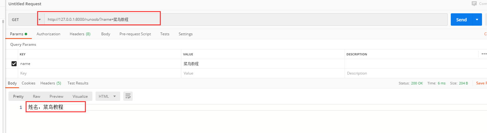
数据类型是 QueryDict，一个类似于字典的对象，包含 HTTP POST 的所有参数。
常用于 form 表单，form 表单里的标签 name 属性对应参数的键，value 属性对应参数的值。
取值格式： 对象.方法。
get()：返回字符串，如果该键对应有多个值，取出该键的最后一个值。
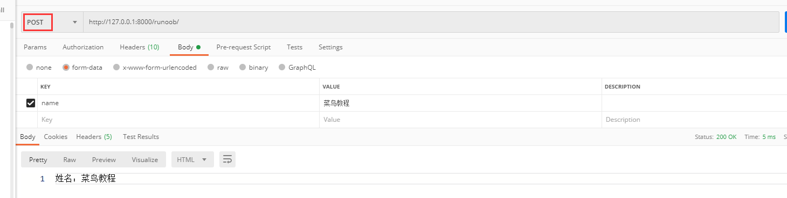
数据类型是二进制字节流，是原生请求体里的参数内容，在 HTTP 中用于 POST，因为 GET 没有请求体。
在 HTTP 中不常用，而在处理非 HTTP 形式的报文时非常有用，例如：二进制图片、XML、Json 等。
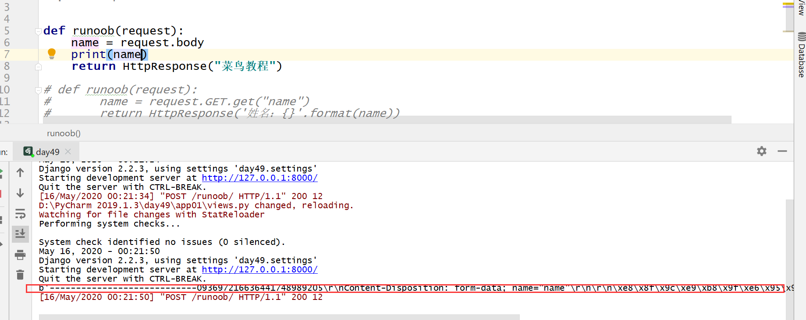
获取 URL 中的路径部分，数据类型是字符串。
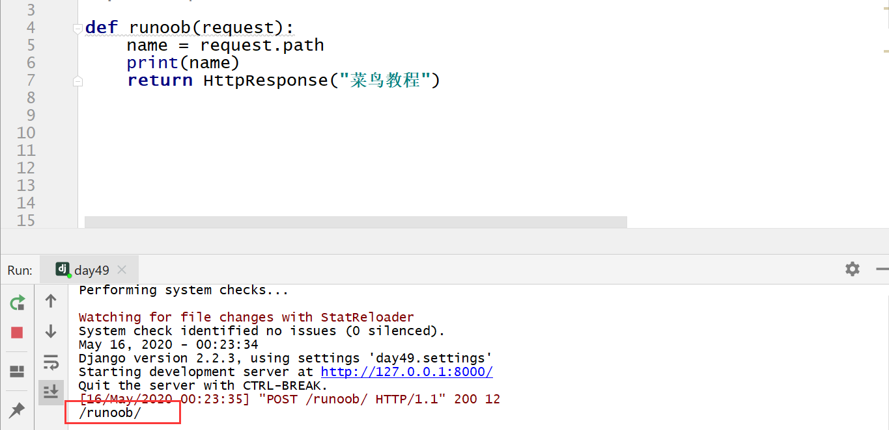
获取当前请求的方式，数据类型是字符串，且结果为大写。
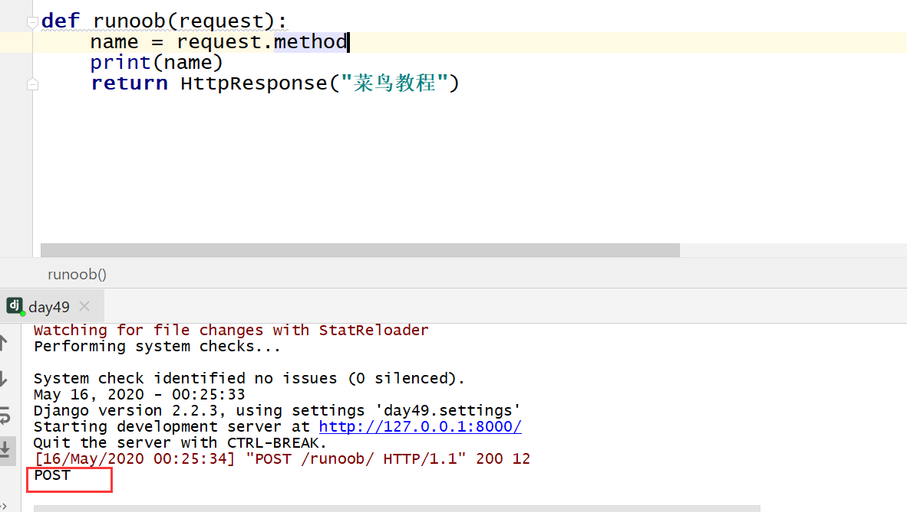
响应对象主要有三种形式：HttpResponse()、render()、redirect()。
HttpResponse(): 返回文本，参数为字符串，字符串中写文本内容。如果参数为字符串里含有 html 标签，也可以渲染。
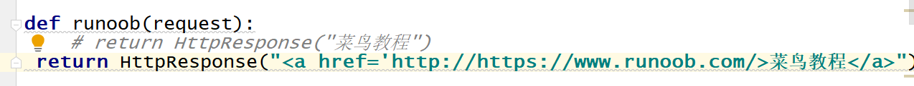
render(): 返回文本，第一个参数为 request，第二个参数为字符串（页面名称），第三个参数为字典（可选参数，向页面传递的参数：键为页面参数名，值为views参数名）。
redirect()：重定向，跳转新页面。参数为字符串，字符串中填写页面路径。一般用于 form 表单提交后，跳转到新页面。
render 和 redirect 是在 HttpResponse 的基础上进行了封装：
路由简单的来说就是根据用户请求的 URL 链接来判断对应的处理程序，并返回处理结果，也就是 URL 与 Django 的视图建立映射关系。
Django 路由在 urls.py 配置，urls.py 中的每一条配置对应相应的处理方法。
Django 不同版本 urls.py 配置有点不一样：
url() 方法：普通路径和正则路径均可使用，需要自己手动添加正则首位限制符号。
总结：Django1.1.x 版本中的 url 和 Django 2.2.x 版本中的 re_path 用法相同。
无名分组按位置传参，一一对应。
views 中除了 request，其他形参的数量要与 urls 中的分组数量一致。
语法：
(?P<组名>正则表达式)
有名分组按关键字传参，与位置顺序无关。
views 中除了 request，其他形参的数量要与 urls 中的分组数量一致， 并且 views 中的形参名称要与 urls 中的组名对应。
存在问题：Django 项目里多个app目录共用一个 urls 容易造成混淆，后期维护也不方便。
解决：使用路由分发（include），让每个app目录都单独拥有自己的 urls。
步骤：
在各自 app 目录下，写自己的 urls.py 文件，进行路径跳转。
app01 目录:
from django.urls import path,re_path
from app01 import views # 从自己的 app 目录引入 views
urlpatterns = [
re_path(r'^login/(?P<m>[0-9]{2})/$', views.index, ),
]
app02 目录:
from django.urls import path,re_path
from app02 import views # 从自己的 app 目录引入views
urlpatterns = [
re_path("^xxx/(?P[0-9]{4})/$", views.xxx),
]
在各自 app 目录下的 views.py 文件中写各自的视图函数。
随着功能的增加，路由层的 url 发生变化，就需要去更改对应的视图层和模板层的 url，非常麻烦，不便维护。
这时我们可以利用反向解析，当路由层 url 发生改变，在视图层和模板层动态反向解析出更改后的 url，免去修改的操作。
反向解析一般用在模板中的超链接及视图中的重定向。
在 urls.py 中给路由起别名，name="路由别名"。
path("login1/", views.login, name="login")
在 views.py 中，从 django.urls 中引入 reverse，利用 reverse("路由别名") 反向解析:
return redirect(reverse("login"))
在模板 templates 中的 HTML 文件中，利用 {% url "路由别名" %} 反向解析。
<form action="{% url 'login' %}" method="post">
在 urls.py 中给路由起别名，name="路由别名"。
re_path(r"^login/([0-9]{2})/$", views.login, name="login")
在 views.py 中，从 django.urls 中引入 reverse，利用 reverse("路由别名"，args=(符合正则匹配的参数,)) 反向解析。
return redirect(reverse("login",args=(10,)))
在模板 templates 中的 HTML 文件中利用 {% url "路由别名" 符合正则匹配的参数 %} 反向解析。
<form action="{% url 'login' 10 %}" method="post">
在 urls.py 中给路由起别名，name="路由别名"。
re_path(r"^login/(?P<year>[0-9]{4})/$", views.login, name="login")
在 views.py 中，从 django.urls 中引入 reverse，利用 reverse("路由别名"，kwargs={"分组名":符合正则匹配的参数}) 反向解析。
return redirect(reverse("login",kwargs={"year":3333}))
在模板 templates 中的 HTML 文件中，利用 {% url "路由别名" 分组名=符合正则匹配的参数 %} 反向解析。
<form action="{% url 'login' year=3333 %}" method="post">
命名空间（英语：Namespace）是表示标识符的可见范围。
一个标识符可在多个命名空间中定义，它在不同命名空间中的含义是互不相干的。
一个新的命名空间中可定义任何标识符，它们不会与任何重复的标识符发生冲突，因为重复的定义都处于其它命名空间中。
存在问题：路由别名 name 没有作用域，Django 在反向解析 URL 时，会在项目全局顺序搜索，当查找到第一个路由别名 name 指定 URL 时，立即返回。当在不同的 app 目录下的urls 中定义相同的路由别名 name 时，可能会导致 URL 反向解析错误。
解决：使用命名空间。
include(("app名称：urls"，"app名称"))
实例：
path("app01/", include(("app01.urls","app01")))
path("app02/", include(("app02.urls","app02")))
在 app01/urls.py 中起相同的路由别名。
path("login/", views.login, name="login")
在 views.py 中使用名称空间，语法格式如下：
reverse("app名称：路由别名")
实例：
return redirect(reverse("app01:login")
在 templates 模板的 HTML 文件中使用名称空间，语法格式如下：
{% url "app名称：路由别名" %}实例：
<form action="{% url 'app01:login' %}" method="post">
Django 提供了基于 web 的管理工具。
Django 自动管理工具是 django.contrib 的一部分。你可以在项目的 settings.py 中的 INSTALLED_APPS 看到它：
django.contrib是一套庞大的功能集，它是Django基本代码的组成部分。
通常我们在生成项目时会在 urls.py 中自动设置好，我们只需去掉注释即可。
配置项如下所示：
当这一切都配置好后，Django 管理工具就可以运行了。
启动开发服务器，然后在浏览器中访问 http://127.0.0.1:8000/admin/，得到如下界面：
你可以通过命令 python manage.py createsuperuser 来创建超级用户，如下所示：
# python manage.py createsuperuser Username (leave blank to use 'root'): admin Email address: admin@runoob.com Password: Password (again): Superuser created successfully. [root@solar HelloWorld]#
之后输入用户名密码登录，界面如下：
为了让 admin 界面管理某个数据模型，我们需要先注册该数据模型到 admin。比如，我们之前在 TestModel 中已经创建了模型 Test 。修改 TestModel/admin.py:
刷新后即可看到 Testmodel 数据表:
管理页面的功能强大，完全有能力处理更加复杂的数据模型。
先在 TestModel/models.py 中增加一个更复杂的数据模型：
这里有两个表。Tag 以 Contact 为外部键。一个 Contact 可以对应多个 Tag。
我们还可以看到许多在之前没有见过的属性类型，比如 IntegerField 用于存储整数。
在 TestModel/admin.py 注册多个模型并显示：
刷新管理页面，显示结果如下：
在以上管理工具我们就能进行复杂模型操作。
如果你之前还未创建表结构，可使用以下命令创建：
$ python manage.py makemigrations TestModel # 让 Django 知道我们在我们的模型有一些变更 $ python manage.py migrate TestModel # 创建表结构
我们可以自定义管理页面，来取代默认的页面。比如上面的 "add" 页面。我们想只显示 name 和 email 部分。修改 TestModel/admin.py:
以上代码定义了一个 ContactAdmin 类，用以说明管理页面的显示格式。
里面的 fields 属性定义了要显示的字段。
由于该类对应的是 Contact 数据模型，我们在注册的时候，需要将它们一起注册。显示效果如下：
我们还可以将输入栏分块，每个栏也可以定义自己的格式。修改 TestModel/admin.py为：
上面的栏目分为了 Main 和 Advance 两部分。classes 说明它所在的部分的 CSS 格式。这里让 Advance 部分隐藏：
Advance 部分旁边有一个 Show 按钮，用于展开，展开后可点击 Hide 将其隐藏，如下图所示：
上面的 Contact 是 Tag 的外部键，所以有外部参考的关系。
而在默认的页面显示中，将两者分离开来，无法体现出两者的从属关系。我们可以使用内联显示，让 Tag 附加在 Contact 的编辑页面上显示。
修改TestModel/admin.py：
显示效果如下：
在 Contact 输入数条记录后，Contact 的列表页看起来如下:
我们也可以自定义该页面的显示，比如在列表中显示更多的栏目，只需要在 ContactAdmin 中增加 list_display 属性:
刷新页面显示效果如下：
搜索功能在管理大量记录时非常有用，我们可以使用 search_fields 为该列表页增加搜索栏：
在本实例中我们搜索了 name 为 runoob 的记录，显示结果如下：
Django Admin 管理工具还有非常多实用的功能，感兴趣的同学可以深入研究下。
阅读本章节前你需要先阅读了 Django 模型 进行基础配置及了解常见问题的解决方案。
接下来我们重新创建一个项目 app01（如果之前已创建过，忽略以下操作）:
django-admin.py startproject app01
接下来在 settings.py 中找到 INSTALLED_APPS 这一项，如下：
INSTALLED_APPS = (
'django.contrib.admin',
'django.contrib.auth',
'django.contrib.contenttypes',
'django.contrib.sessions',
'django.contrib.messages',
'django.contrib.staticfiles',
'app01', # 添加此项
)
接下来，告诉 Django 使用 pymysql 模块连接 mysql 数据库：
在项目中的 models.py 中添加以下类：
然后在命令行执行以下命令：
$ python3 manage.py migrate # 创建表结构 $ python3 manage.py makemigrations app01 # 让 Django 知道我们在我们的模型有一些变更 $ python3 manage.py migrate app01 # 创建表结构
如果执行以上命令时会出现如下报错信息:
原因是 MySQLclient 目前只支持到 Python3.4，因此如果使用的更高版本的 python，需要修改如下：
通过报错信息的文件路径找到 ...site-packages\Django-2.0-py3.6.egg\django\db\backends\mysql 这个路径里的 base.py 文件，把这两行代码注释掉（代码在文件开头部分）：
if version < (1, 3, 13):
raise ImproperlyConfigured('mysqlclient 1.3.13 or newer is required; you have %s.' % Database.__version__)
一般点报错的代码文件路径信息，会自动跳转到报错文件中行数，此时我们在报错的代码行数注释掉。
这时数据库 runoob 就会创建一个 app01_book 的表。
接下来我们在app01 项目里添加 views.py 和 models.py 文件，app01 项目目录结构：
app01 |-- app01 | |-- __init__.py | |-- __pycache__ | |-- asgi.py | |-- migrations | |-- models.py | |-- settings.py | |-- urls.py | |-- views.py | `-- wsgi.py
规则配置：
方式一：模型类实例化对象
需从 app 目录引入 models.py 文件：
from app 目录 import models
并且实例化对象后要执行 对象.save() 才能在数据库中新增成功。
方式二：通过 ORM 提供的 objects 提供的方法 create 来实现（推荐）
使用 all() 方法来查询所有内容。
返回的是 QuerySet 类型数据，类似于 list，里面放的是一个个模型类的对象，可用索引下标取出模型类的对象。
filter() 方法用于查询符合条件的数据。
返回的是 QuerySet 类型数据，类似于 list，里面放的是满足条件的模型类的对象，可用索引下标取出模型类的对象。
pk=3 的意思是主键 primary key=3，相当于 id=3。
因为 id 在 pycharm 里有特殊含义，是看内存地址的内置函数 id()，因此用 pk。
exclude() 方法用于查询不符合条件的数据。
返回的是 QuerySet 类型数据，类似于 list，里面放的是不满足条件的模型类的对象，可用索引下标取出模型类的对象。
get() 方法用于查询符合条件的返回模型类的对象符合条件的对象只能为一个，如果符合筛选条件的对象超过了一个或者没有一个都会抛出错误。
order_by() 方法用于对查询结果进行排序。
返回的是 QuerySet类型数据，类似于list，里面放的是排序后的模型类的对象，可用索引下标取出模型类的对象。
注意：
reverse() 方法用于对查询结果进行反转。
返回的是 QuerySe t类型数据，类似于 list，里面放的是反转后的模型类的对象，可用索引下标取出模型类的对象。
count() 方法用于查询数据的数量返回的数据是整数。
first() 方法返回第一条数据返回的数据是模型类的对象也可以用索引下标 [0]。
last() 方法返回最后一条数据返回的数据是模型类的对象不能用索引下标 [-1]，ORM 没有逆序索引。
exists() 方法用于判断查询的结果 QuerySet 列表里是否有数据。
返回的数据类型是布尔，有为 true，没有为 false。
注意：判断的数据类型只能为 QuerySet 类型数据，不能为整型和模型类的对象。
values() 方法用于查询部分字段的数据。
返回的是 QuerySet 类型数据，类似于 list，里面不是模型类的对象，而是一个可迭代的字典序列，字典里的键是字段，值是数据。
注意：
values_list() 方法用于查询部分字段的数据。
返回的是 QuerySet 类型数据，类似于 list，里面不是模型类的对象，而是一个个元组，元组里放的是查询字段对应的数据。
注意：
distinct() 方法用于对数据进行去重。
返回的是 QuerySet 类型数据。
注意：
filter() 方法基于双下划线的模糊查询（exclude 同理）。
注意：filter 中运算符号只能使用等于号 = ，不能使用大于号 > ，小于号 < ，等等其他符号。
__in 用于读取区间，= 号后面为列表 。
__gt 大于号 ，= 号后面为数字。
# 查询价格大于200的数据 books = models.Book.objects.filter(price__gt=200)__gte 大于等于，= 号后面为数字。
# 查询价格大于等于200的数据 books = models.Book.objects.filter(price__gte=200)
__lt 小于，=号后面为数字。
# 查询价格小于300的数据 books=models.Book.objects.filter(price__lt=300)
__lte 小于等于，= 号后面为数字。
# 查询价格小于等于300的数据 books=models.Book.objects.filter(price__lte=300)
__range 在 ... 之间，左闭右闭区间，= 号后面为两个元素的列表。
books=models.Book.objects.filter(price__range=[200,300])
__contains 包含，= 号后面为字符串。
books=models.Book.objects.filter(title__contains="菜")
__icontains 不区分大小写的包含，= 号后面为字符串。
books=models.Book.objects.filter(title__icontains="python") # 不区分大小写
__startswith 以指定字符开头，= 号后面为字符串。
books=models.Book.objects.filter(title__startswith="菜")
__endswith 以指定字符结尾，= 号后面为字符串。
books=models.Book.objects.filter(title__endswith="教程")
__year 是 DateField 数据类型的年份，= 号后面为数字。
books=models.Book.objects.filter(pub_date__year=2008)
__month 是DateField 数据类型的月份，= 号后面为数字。
books=models.Book.objects.filter(pub_date__month=10)
__day 是DateField 数据类型的天数，= 号后面为数字。
books=models.Book.objects.filter(pub_date__day=01)
方式一：使用模型类的 对象.delete()。
返回值：元组，第一个元素为受影响的行数。
books=models.Book.objects.filter(pk=8).first().delete()
方式二：使用 QuerySet 类型数据.delete()(推荐)
返回值：元组，第一个元素为受影响的行数。
books=models.Book.objects.filter(pk__in=[1,2]).delete()
注意：
books=models.Book.objects.delete() # 报错 books=models.Book.objects.all().delete() # 删除成功
方式一：
模型类的对象.属性 = 更改的属性值 模型类的对象.save()
返回值：编辑的模型类的对象。
books = models.Book.objects.filter(pk=7).first() books.price = 400 books.save()
方式二：QuerySet 类型数据.update(字段名=更改的数据)（推荐）
返回值：整数，受影响的行数
表与表之间的关系可分为以下三种：
接下来我们来看下多表多实例。
说明：
书籍表 Book：title 、 price 、 pub_date 、 publish（外键，多对一） 、 authors（多对多）
出版社表 Publish：name 、 city 、 email
作者表 Author：name 、 age 、 au_detail（一对一）
作者详情表 AuthorDetail：gender 、 tel 、 addr 、 birthday
以下是表格关联说明：
我们在 MySQL 中执行以下 SQL 插入操作：
insert into app01_publish(name,city,email) values ("华山出版社", "华山", "hs@163.com"), ("明教出版社", "黑木崖", "mj@163.com")
# 先插入 authordetail 表中多数据
insert into app01_authordetail(gender,tel,addr,birthday) values (1,13432335433,"华山","1994-5-23"), (1,13943454554,"黑木崖","1961-8-13"), (0,13878934322,"黑木崖","1996-5-20")
# 再将数据插入 author，这样 author 才能找到 authordetail
insert into app01_author(name,age,au_detail_id) values ("令狐冲",25,1), ("任我行",58,2), ("任盈盈",23,3)
方式一: 传对象的形式，返回值的数据类型是对象，书籍对象。
步骤：
方式二: 传对象 id 的形式(由于传过来的数据一般是 id,所以传对象 id 是常用的)。
一对多中，设置外键属性的类(多的表)中，MySQL 中显示的字段名是:外键属性名_id。
返回值的数据类型是对象，书籍对象。
步骤：
方式一: 传对象形式，无返回值。
步骤：
方式二: 传对象id形式，无返回值。
步骤：
前提：
语法格式：
正向：属性名 反向：小写类名加 _set
注意：一对多只能反向
常用方法：
add()：用于多对多，把指定的模型对象添加到关联对象集（关系表）中。
注意：add() 在一对多(即外键)中，只能传对象（ *QuerySet数据类型），不能传 id（*[id表]）。
*[ ] 的使用:
# 方式一：传对象 book_obj = models.Book.objects.get(id=10)反向：小写表名_set
ying = models.Author.objects.filter(name="任盈盈").first()create()：创建一个新的对象，并同时将它添加到关联对象集之中。
返回新创建的对象。
pub = models.Publish.objects.filter(name="明教出版社").first()remove()：从关联对象集中移除执行的模型对象。
对于 ForeignKey 对象，这个方法仅在 null=True（可以为空）时存在，无返回值。
clear()：从关联对象集中移除一切对象，删除关联，不会删除对象。
对于 ForeignKey 对象，这个方法仅在 null=True（可以为空）时存在。
无返回值。
# 清空独孤九剑关联的所有作者基于对象的跨表查询。
正向：属性名称 反向：小写类名_set
查询主键为 1 的书籍的出版社所在的城市（正向）。
查询明教出版社出版的书籍名（反向）。
反向：对象.小写类名_set(pub.book_set) 可以跳转到关联的表(书籍表)。
pub.book_set.all()：取出书籍表的所有书籍对象，在一个 QuerySet 里，遍历取出一个个书籍对象。
查询令狐冲的电话（正向）
正向：对象.属性 (author.au_detail) 可以跳转到关联的表(作者详情表)
查询所有住址在黑木崖的作者的姓名（反向）。
一对一的反向，用 对象.小写类名 即可，不用加 _set。
反向：对象.小写类名(addr.author)可以跳转到关联的表(作者表)。
菜鸟教程所有作者的名字以及手机号（正向）。
正向：对象.属性(book.authors)可以跳转到关联的表(作者表)。
作者表里没有作者电话，因此再次通过对象.属性(i.au_detail)跳转到关联的表（作者详情表）。
查询任我行出过的所有书籍的名字（反向）。
查询菜鸟出版社出版过的所有书籍的名字与价格。
反向：通过 小写类名__跨表的属性名称（book__title，book__price） 跨表获取数据。
查询任我行出过的所有书籍的名字。
正向：通过 属性名称__跨表的属性名称(authors__name) 跨表获取数据：
res = models.Book.objects.filter(authors__name="任我行").values_list("title")
反向：通过 小写类名__跨表的属性名称（book__title） 跨表获取数据：
res = models.Author.objects.filter(name="任我行").values_list("book__title")
查询任我行的手机号。
正向：通过 属性名称__跨表的属性名称(au_detail__tel) 跨表获取数据。
res = models.Author.objects.filter(name="任我行").values_list("au_detail__tel")
反向：通过 小写类名__跨表的属性名称（author__name） 跨表获取数据。
res = models.AuthorDetail.objects.filter(author__name="任我行").values_list("tel")
聚合查询函数是对一组值执行计算，并返回单个值。
Django 使用聚合查询前要先从 django.db.models 引入 Avg、Max、Min、Count、Sum（首字母大写）。
from django.db.models import Avg,Max,Min,Count,Sum # 引入函数
聚合查询返回值的数据类型是字典。
聚合函数 aggregate() 是 QuerySet 的一个终止子句， 生成的一个汇总值，相当于 count()。
使用 aggregate() 后，数据类型就变为字典，不能再使用 QuerySet 数据类型的一些 API 了。
日期数据类型(DateField)可以用 Max 和 Min。
返回的字典中：键的名称默认是（属性名称加上__聚合函数名），值是计算出来的聚合值。
如果要自定义返回字典的键的名称，可以起别名：
aggregate(别名 = 聚合函数名("属性名称"))
计算所有图书的平均价格:
计算所有图书的数量、最贵价格和最便宜价格:
分组查询一般会用到聚合函数，所以使用前要先从 django.db.models 引入 Avg,Max,Min,Count,Sum（首字母大写）。
from django.db.models import Avg,Max,Min,Count,Sum # 引入函数
返回值：
MySQL 中的 limit 相当于 ORM 中的 QuerySet 数据类型的切片。
注意：
annotate 里面放聚合函数。
values 或者 values_list 放在 annotate 前面：values 或者 values_list 是声明以什么字段分组，annotate 执行分组。
values 或者 values_list 放在annotate后面： annotate 表示直接以当前表的pk执行分组，values 或者 values_list 表示查询哪些字段， 并且要将 annotate 里的聚合函数起别名，在 values 或者 values_list 里写其别名。
数据:
统计每一个出版社的最便宜的书的价格：
命令行中可以看到以下输出：
<QuerySet [{'name': '菜鸟出版社', 'in_price': Decimal('100.00')}, {'name': '明教出版社', 'in_price': Decimal('300.00')}]>
统计每一本书的作者个数：
<QuerySet [{'title': '菜鸟教程', 'c': 1}, {'title': '吸星大法', 'c': 1}, {'title': '冲灵剑法', 'c': 1}]>
统计每一本以"菜"开头的书籍的作者个数：
统计不止一个作者的图书名称：
<QuerySet [{'title': '菜鸟教程', 'c': 1}, {'title': '吸星大法', 'c': 1}, {'title': '冲灵剑法', 'c': 1}]>
根据一本图书作者数量的多少对查询集 QuerySet 进行降序排序:
查询各个作者出的书的总价格:
F() 的实例可以在查询中引用字段，来比较同一个 model 实例中两个不同字段的值。
之前构造的过滤器都只是将字段值与某个常量做比较，如果想要对两个字段的值做比较，就需要用到 F()。
使用前要先从 django.db.models 引入 F:
from django.db.models import F
用法：
F("字段名称")
F 动态获取对象字段的值，可以进行运算。
Django 支持 F() 对象之间以及 F() 对象和常数之间的加减乘除和取余的操作。
修改操作（update）也可以使用 F() 函数。
查询工资大于年龄的人：
将每一本书的价格提高100元:
from django.db.models import Q
用法：
Q(条件判断)
例如：
Q(title__startswith="菜")
之前构造的过滤器里的多个条件的关系都是 and，如果需要执行更复杂的查询（例如 or 语句），就可以使用 Q 。
Q 对象可以使用 & | ~ （与 或 非）操作符进行组合。
优先级从高到低：~ & |。
可以混合使用 Q 对象和关键字参数，Q 对象和关键字参数是用"and"拼在一起的（即将逗号看成 and ），但是 Q 对象必须位于所有关键字参数的前面。
查询价格大于 350 或者名称以菜开头的书籍的名称和价格。
from django.db.models import Q查询以"菜"结尾或者不是 2010 年 10 月份的书籍:
查询出版日期是 2004 或者 1999 年，并且书名中包含有"菜"的书籍。
Q 对象和关键字混合使用，Q 对象要在所有关键字的前面:
Django Form 组件用于对页面进行初始化，生成 HTML 标签，此外还可以对用户提交的数据进行校验（显示错误信息）。
报错信息显示顺序：
使用 Form 组件，需要先导入 forms：
from django import forms
接下来我们在 app01 目录下创建一个 My_forms.py:
字段属性：
app01/urls.py 文件添加以下规则：
path('add_emp/', views.add_emp)
HTML 模版：
运行结果如下图所示：
定义 Form 类:
views.py 文件代码：
模板文件代码如下：
运行结果如下图所示：
Django 用户认证（Auth）组件一般用在用户的登录注册上，用于判断当前的用户是否合法，并跳转到登陆成功或失败页面。
Django 用户认证（Auth）组件需要导入 auth 模块:
# 认证模块 from django.contrib import auth # 对应数据库 from django.contrib.auth.models import User
返回值是用户对象。
创建用户对象的三种方法：
参数：
from django.contrib.auth.models import User User.objects.create(username='runboo',password='123')
from django.contrib.auth.models import User User.objects.create_user(username='runbooo',password='123')
from django.contrib.auth.models import User User.objects.create_superuser(username='runboooo',password='123',email='runboo@163.com')
验证用户的用户名和密码使用 authenticate() 方法，从需要 auth_user 表中过滤出用户对象。
使用前要导入：
from django.contrib import auth
参数：
返回值：如果验证成功，就返回用户对象，反之，返回 None。
给验证成功的用户加 session，将 request.user 赋值为用户对象。
登陆使用 login() 方法。使用前要导入：
from django.contrib import auth
参数：
返回值：None
注销用户使用 logout() 方法，需要清空 session 信息，将 request.user 赋值为匿名用户。
使用前要导入：
from django.contrib import auth
参数：
返回值：None
设置装饰器，给需要登录成功后才能访问的页面统一加装饰器。
使用前要导入：
from django.contrib.auth.decorators import login_required
设置从哪个页面访问，登录成功后就返回哪个页面。
解析：
django 在用户访问页面时，如果用户是未登录的状态，就给用户返回登录页面。
此时，该登录页面的 URL 后面有参数：next=用户访问的页面的 URL。
因此，设置在用户登录成功后重定向的 URL 为 next 参数的值。
但是，若用户一开始就输入登录页面 logi，request.GET.get("next") 就取不到值，所以在后面加 or，可以设置自定义返回的页面。
Cookie 是存储在客户端计算机上的文本文件，并保留了各种跟踪信息。
识别返回用户包括三个步骤：
HTTP 是一种"无状态"协议，这意味着每次客户端检索网页时，客户端打开一个单独的连接到 Web 服务器，服务器会自动不保留之前客户端请求的任何记录。
但是仍然有以下三种方式来维持 Web 客户端和 Web 服务器之间的 session 会话：
一个 Web 服务器可以分配一个唯一的 session 会话 ID 作为每个 Web 客户端的 cookie，对于客户端的后续请求可以使用接收到的 cookie 来识别。
在Web开发中，使用 session 来完成会话跟踪，session 底层依赖 Cookie 技术。
设置 cookie:
rep.set_cookie(key,value,...) rep.set_signed_cookie(key,value,salt='加密盐',...)
获取 cookie:
request.COOKIES.get(key)
删除 cookie:
rep =HttpResponse || render || redirect rep.delete_cookie(key)
以下创建三个模板文件：login.html、index.html、order.html。
运行结果如下图所示：
服务器在运行时可以为每一个用户的浏览器创建一个其独享的 session 对象，由于 session 为用户浏览器独享，所以用户在访问服务器的 web 资源时，可以把各自的数据放在各自的 session 中，当用户再去访问该服务器中的其它 web 资源时，其它 web 资源再从用户各自的 session 中取出数据为用户服务。
a. 浏览器第一次请求获取登录页面 login。
b. 浏览器输入账号密码第二次请求，若输入正确，服务器响应浏览器一个 index 页面和一个键为 sessionid，值为随机字符串的 cookie，即 set_cookie ("sessionid",随机字符串)。
c. 服务器内部在 django.session 表中记录一条数据。
django.session 表中有三个字段。
d. 浏览器第三次请求其他资源时，携带 cookie :{sessionid:随机字符串}，服务器从 django.session 表中根据该随机字符串取出该用户的数据，供其使用（即保存状态）。
注意: django.session 表中保存的是浏览器的信息，而不是每一个用户的信息。 因此， 同一浏览器多个用户请求只保存一条记录（后面覆盖前面）,多个浏览器请求才保存多条记录。
cookie 弥补了 http 无状态的不足，让服务器知道来的人是"谁"，但是 cookie 以文本的形式保存在浏览器端，安全性较差，且最大只支持 4096 字节，所以只通过 cookie 识别不同的用户，然后，在对应的 session 里保存私密的信息以及超过 4096 字节的文本。
session 设置：
request.session["key"] = value
执行步骤：
session 获取：
request.session.get('key')
执行步骤：
session 删除，删除整条记录（包括 session_key、session_data、expire_date 三个字段）：
request.session.flush()
删除 session_data 里的其中一组键值对：
del request.session["key"]
执行步骤：
创建路由:
创建视图函数:
模板文件：
运行结果如下图所示：
Django 中间件是修改 Django request 或者 response 对象的钩子，可以理解为是介于 HttpRequest 与 HttpResponse 处理之间的一道处理过程。
浏览器从请求到响应的过程中，Django 需要通过很多中间件来处理，可以看如下图所示：
Django 中间件作用：
中间件组件配置在 settings.py 文件的 MIDDLEWARE 选项列表中。
配置中的每个字符串选项都是一个类，也就是一个中间件。Django 默认的中间件配置：
MIDDLEWARE = [中间件可以定义四个方法，分别是：
process_request(self,request)自定义中间件的步骤：
在 app 目录下新建一个 py 文件，名字自定义，并在该 py 文件中导入 MiddlewareMixin：
from django.utils.deprecation import MiddlewareMixin
自定义的中间件类，要继承父类 MiddlewareMixin:
class MD1(MiddlewareMixin):
pass
在 settings.py 中的 MIDDLEWARE 里注册自定义的中间件类:
MIDDLEWARE = [自定义中间件类的方法有：process_request 和 process_response。
process_request 方法有一个参数 request，这个 request 和视图函数中的 request 是一样的。
process_request 方法的返回值可以是 None 也可以是 HttpResponse 对象。
process_request 方法是在视图函数之前执行的。
当配置多个中间件时，会按照 MIDDLEWARE中 的注册顺序，也就是列表的索引值，顺序执行。
不同中间件之间传递的 request 参数都是同一个请求对象。
process_response 方法有两个参数，一个是 request，一个是 response，request 是请求对象，response 是视图函数返回的 HttpResponse 对象，该方法必须要有返回值，且必须是response。
process_response 方法是在视图函数之后执行的。
当配置多个中间件时，会按照 MIDDLEWARE 中的注册顺序，也就是列表的索引值，倒序执行。
从下图看，正常的情况下按照绿色的路线进行执行,假设中间件1有返回值，则按照红色的路线走，直接执行该类下的 process_response 方法返回，后面的其他中间件就不会执行。
process_view 方法格式如下：
process_view(request, view_func, view_args, view_kwargs)process_view 方法有四个参数：
view_args 和 view_kwargs 都不包含第一个视图参数（request）。
process_view 方法是在视图函数之前，process_request 方法之后执行的。
返回值可以是 None、view_func(request) 或 HttpResponse 对象。
当最后一个中间件的 process_request 到达路由关系映射之后，返回到第一个中间件 process_view，然后依次往下，到达视图函数。
process_exception 方法如下：
process_exception(request, exception)
参数说明：
process_exception 方法只有在视图函数中出现异常了才执行，按照 settings 的注册倒序执行。
在视图函数之后，在 process_response 方法之前执行。
process_exception 方法的返回值可以是一个 None 也可以是一个 HttpResponse 对象。
返回值是 None，页面会报 500 状态码错误，视图函数不会执行。
process_exception 方法倒序执行，然后再倒序执行 process_response 方法。
返回值是 HttpResponse 对象，页面不会报错，返回状态码为 200。
视图函数不执行，该中间件后续的 process_exception 方法也不执行，直接从最后一个中间件的 process_response 方法倒序开始执行。
若是 process_view 方法返回视图函数，提前执行了视图函数，且视图函数报错，则无论 process_exception 方法的返回值是什么，页面都会报错， 且视图函数和 process_exception 方法都不执行。
直接从最后一个中间件的 process_response 方法开始倒序执行：
FBV（function base views） 基于函数的视图，就是在视图里使用函数处理请求。
CBV（class base views） 基于类的视图，就是在视图里使用类处理请求。
基于函数的视图其实我们前面章节一直在使用，就是使用了函数来处理用户的请求，查看以下实例：
路由配置：
如果我们在浏览器中直接访问 http://127.0.0.1:8000/login/ ，输出结果为：
GET 方法
基于类的视图，就是使用了类来处理用户的请求，不同的请求我们可以在类中使用不同方法来处理，这样大大的提高了代码的可读性。
定义的类要继承父类 View，所以需要先引入库：
from django.views import View
执行对应请求的方法前会优先执行 dispatch 方法(在get/post/put...方法前执行)，dispatch() 方法会根据请求的不同调用相应的方法来处理。
其实，在我们前面学到的知识都知道 Django 的 url 是将一个请求分配给可调用的函数的，而不是一个类，那是如何实现基于类的视图的呢？ 主要还是通过父类 View 提供的一个静态方法 as_view() ，as_view 方法是基于类的外部接口， 他返回一个视图函数，调用后请求会传递给 dispatch 方法，dispatch 方法再根据不同请求来处理不同的方法。
路由配置：
如果我们在浏览器中直接访问 http://127.0.0.1:8000/login/ ，输出结果为：
GET 方法
在前面的章节中我们使用 python manage.py runserver 来运行服务器。这只适用测试环境中使用。
正式发布的服务，我们需要一个可以稳定而持续的服务器，比如apache, Nginx, lighttpd等，本文将以 Nginx 为例。
你也可以直接参考：Python uwsgi 安装配置
Centos 下安装步骤如下：
yum groupinstall "Development tools" yum install zlib-devel bzip2-devel pcre-devel openssl-devel ncurses-devel sqlite-devel readline-devel tk-devel
CentOS 自带 Python 2.4.3，但我们可以再安装Python2.7.5：
cd ~ wget http://python.org/ftp/python/2.7.5/Python-2.7.5.tar.bz2 tar xvf Python-2.7.5.tar.bz2 cd Python-2.7.5 ./configure --prefix=/usr/local make && make altinstall
easy_install 包 https://pypi.python.org/pypi/distribute
安装步骤:
cd ~ wget https://pypi.python.org/packages/source/d/distribute/distribute-0.6.49.tar.gz tar xf distribute-0.6.49.tar.gz cd distribute-0.6.49 python2.7 setup.py install easy_install --version
pip 包: https://pypi.python.org/pypi/pip
安装 pip 的好处是可以用 pip list、pip uninstall 管理 Python 包， easy_install 没有这个功能，只有 uninstall。
uwsgi:https://pypi.python.org/pypi/uWSGI
uwsgi 参数详解：http://uwsgi-docs.readthedocs.org/en/latest/Options.html
pip install uwsgi uwsgi --version # 查看 uwsgi 版本
测试 uwsgi 是否正常：
新建 test.py 文件，内容如下：
def application(env, start_response):
start_response('200 OK', [('Content-Type','text/html')])
return "Hello World"
然后在终端运行：
uwsgi --http :8001 --wsgi-file test.py
在浏览器内输入：http://127.0.0.1:8001，查看是否有"Hello World"输出，若没有输出，请检查你的安装过程。
pip install django
测试 django 是否正常，运行：
django-admin.py startproject demosite cd demosite python2.7 manage.py runserver 0.0.0.0:8002
在浏览器内输入：http://127.0.0.1:8002，检查django是否运行正常。
安装命令如下：
cd ~ wget http://nginx.org/download/nginx-1.5.6.tar.gz tar xf nginx-1.5.6.tar.gz cd nginx-1.5.6 ./configure --prefix=/usr/local/nginx-1.5.6 \ --with-http_stub_status_module \ --with-http_gzip_static_module make && make install
你可以阅读 Nginx 安装配置 了解更多内容。
uwsgi支持ini、xml等多种配置方式，本文以 ini 为例， 在/etc/目录下新建uwsgi9090.ini，添加如下配置：
[uwsgi] socket = 127.0.0.1:9090 master = true //主进程 vhost = true //多站模式 no-site = true //多站模式时不设置入口模块和文件 workers = 2 //子进程数 reload-mercy = 10 vacuum = true //退出、重启时清理文件 max-requests = 1000 limit-as = 512 buffer-size = 30000 pidfile = /var/run/uwsgi9090.pid //pid文件，用于下面的脚本启动、停止该进程 daemonize = /website/uwsgi9090.log
找到nginx的安装目录（如：/usr/local/nginx/），打开conf/nginx.conf文件，修改server配置：
server {
listen 80;
server_name localhost;
location / {
include uwsgi_params;
uwsgi_pass 127.0.0.1:9090; //必须和uwsgi中的设置一致
uwsgi_param UWSGI_SCRIPT demosite.wsgi; //入口文件，即wsgi.py相对于项目根目录的位置，“.”相当于一层目录
uwsgi_param UWSGI_CHDIR /demosite; //项目根目录
index index.html index.htm;
client_max_body_size 35m;
}
}
你可以阅读 Nginx 安装配置 了解更多内容。
设置完成后，在终端运行：
uwsgi --ini /etc/uwsgi9090.ini & /usr/local/nginx/sbin/nginx
在浏览器输入：http://127.0.0.1，你就可以看到 django 的 "It work" 了。
本章带你从零开始，用 Django 创建一个博客项目，理解项目结构和请求生命周期。
Django 是 Python Web 框架，需要先确认 Python 环境。
打开终端，检查 Python 版本（需要 3.8 以上）：
$ python3 --version Python 3.12.0
虚拟环境是 Python 项目的标准实践，让每个项目有独立的依赖，互不干扰。
$ python3 -m venv venv # 创建虚拟环境 $ source venv/bin/activate # 激活虚拟环境（Windows：venv\Scripts\activate） (venv) $ pip install django # 在虚拟环境中安装 Django
验证安装是否成功：
(venv) $ python -m django --version 5.0
每次打开新终端，都需要先执行
source venv/bin/activate激活虚拟环境。终端提示符前面的(venv)表示当前已在虚拟环境中。
Django 提供了 django-admin startproject 命令来初始化项目。
(venv) $ django-admin startproject blog_project (venv) $ cd blog_project
执行后会生成以下目录结构：
blog_project/ ├── manage.py # 项目管理入口（启动服务器、执行迁移、创建 admin 等） ├── blog_project/ # 项目配置包 │ ├── __init__.py # 标识这是一个 Python 包 │ ├── settings.py # 全局配置（数据库、中间件、模板、静态文件等） │ ├── urls.py # 根 URL 路由表 │ ├── wsgi.py # WSGI 部署入口（生产环境用） │ └── asgi.py # ASGI 部署入口（WebSocket 用）
(venv) $ python manage.py runserver Watching for file changes with StatReloader Performing system checks... System check identified no issues (0 silenced). Starting development server at http://127.0.0.1:8000/
浏览器访问 http://127.0.0.1:8000/，看到 Django 的欢迎页面，说明启动成功。
开发服务器自带热重载：修改代码保存后，服务器会自动重启。按 Ctrl+C 停止服务器。
settings.py 是 Django 项目的中央配置文件，每个配置项都有明确的含义。
| 配置项 | 默认值 | 作用 |
|---|---|---|
| DEBUG | True | 开发模式（上线后必须设为 False） |
| DATABASES | SQLite | 数据库配置（默认 SQLite，无需额外安装） |
| INSTALLED_APPS | 内置应用列表 | 注册到项目的应用 |
| TEMPLATES | DjangoTemplates | 模板引擎配置 |
| LANGUAGE_CODE | 'en-us' | 语言（可改为 'zh-hans'） |
| TIME_ZONE | 'UTC' | 时区（可改为 'Asia/Shanghai'） |
把语言和时区改为中文环境：
Django 的项目组织方式是 项目（Project）包含多个应用（App）。
每个 App 负责一个独立的功能模块（如博客、用户、评论）。
(venv) $ python manage.py startapp blog
执行后生成了 blog/ 目录：
blog/ ├── __init__.py ├── admin.py # 后台管理配置（第三章用到） ├── apps.py # 应用配置 ├── models.py # 数据库模型（第二章用到） ├── views.py # 视图函数（本章用到） ├── urls.py # 需要手动创建（应用级路由） └── migrations/ # 数据库迁移文件（第二章用到）
创建 App 后，需要在 settings.py 中注册：
理解请求在 Django 中的流转过程，有助于后续快速定位问题。
浏览器输入 URL → urls.py 匹配路由 → views.py 处理逻辑 → templates 渲染 HTML → 返回浏览器。
这三步（URL → View → Template）是 Django 开发的骨架模式。
在 blog/ 目录下创建 templates/blog/ 子目录，然后创建 index.html。
Django 模板变量使用
{{ 变量名 }}语法，与 Vue3 的插值表达式一样。views.py 中传给 render 的字典数据，在模板中可以直接用。
先在 blog/ 下创建 urls.py 作为应用级路由。
然后在项目级 urls.py 中用 include() 引入应用路由：
本章你完成了三件事：创建虚拟环境并安装 Django、用 startproject/startapp 初始化项目、编写了 View → Template → URL 的完整链路。
核心收获：理解 Django 的项目/应用层级结构，掌握 URL → View → Template 三步走开发模式。
本章你将学会用 Django ORM 定义数据模型，创建数据库表，并插入测试数据。
上一章我们硬编码了页面文字。真正的博客需要存储多篇文章，且内容随时会变。
模型（Model） 是 Django 的数据库层：用 Python 类定义数据结构，Django 自动生成对应的数据库表。
你不需要写一行 SQL——这就是 ORM（对象关系映射） 的核心价值。
打开 blog/models.py，定义文章模型。
| 字段类型 | 对应数据库类型 | 使用场景 |
|---|---|---|
| CharField(max_length=N) | VARCHAR(N) | 标题、标签、名称等短文本 |
| TextField() | TEXT | 文章正文、简介、评论等内容 |
| IntegerField() | INTEGER | 计数、年龄等整数 |
| DateTimeField() | DATETIME | 发布时间、更新时间 |
| ForeignKey() | 外键约束 | 一对多关系（文章→分类） |
| ManyToManyField() | 中间表 | 多对多关系（文章←→标签） |
| SlugField() | VARCHAR | URL 友好的标识符 |
| ImageField() | VARCHAR(路径) | 封面图、头像（需 Pillow 库） |
__str__方法决定了对象如何以字符串形式显示。在 Admin 后台的下拉选择框和 Shell 输出中，都会调用它来展示对象名称。不写这个方法，你会看到Post object (1)这样的无意义文字。
模型类写好后，需要用 迁移（Migration） 建立数据库表。
(venv) $ python manage.py makemigrations # 生成迁移文件（检测模型变化）
Migrations for 'blog':
blog/migrations/0001_initial.py
- Create model Category
- Create model Post
(venv) $ python manage.py migrate # 执行迁移（创建数据库表）
Operations to perform:
Apply all migrations: admin, auth, blog, contenttypes, sessions
Running migrations:
Applying blog.0001_initial... OK
两个命令的分工：
每次修改 models.py 后，都要运行
makemigrations+migrate这两个命令。缺一不可：只 makemigrations 没 migrate，表不会创建；直接 migrate 不 makemigrations，Django 不知道你改了模型。
在开始写页面之前，先用 Django Shell 往数据库里录入几条数据，验证模型是否正常工作。
(venv) $ python manage.py shell
这会打开一个交互式 Python Shell，可以在里面操作数据库。
ORM 让你用 Python 方法链操作数据库，无需写 SQL。
| 方法 | 等价 SQL | 返回值 |
|---|---|---|
Post.objects.all() | SELECT * FROM blog_post | QuerySet（所有文章） |
Post.objects.get(id=1) | SELECT ... WHERE id=1 | 单个对象（找不到会抛异常） |
Post.objects.filter(category__slug='django') | WHERE category.slug='django' | QuerySet |
Post.objects.order_by('-created_at') | ORDER BY created_at DESC | QuerySet |
Post.objects.exclude(status='draft') | WHERE status != 'draft' | QuerySet |
QuerySet 是 惰性求值 的：定义了查询不会立即执行，只有在真正需要数据时（如遍历、打印、转为 list）才发 SQL。所以你可以链式调用多个 filter 而不产生多次查询。
在 Shell 中多录入几篇文章和分类，覆盖 Django、Python、CSS 三个分类，每个分类至少 2 篇文章。
可以编写一个管理命令或脚本批量插入，但现阶段用 Shell 逐条插入足够了。
本章你掌握了 Django ORM 的核心流程：在 models.py 中定义 Python 类（模型）、makemigrations 生成迁移文件、migrate 同步到数据库、用 Shell 和 ORM 查询插入数据。
至此，文章和分类的结构已在数据库中建立。
本章你将学会配置 Django Admin，无需写前端代码就能拥有内容管理后台。
Django Admin 是 Django 最强大的内置功能之一：你只需注册模型，它就自动生成一个完整的后台管理系统。
后台提供文章的增删改查、搜索、过滤、分页等功能，无需你自己写任何 CRUD 代码。
首先需要创建一个管理员账号来登录后台：
(venv) $ python manage.py createsuperuser 用户名：admin 电子邮件地址：admin@runoob.com Password: # 输入密码（不会回显） Password (again): # 重复密码 Superuser created successfully.
启动服务器后访问 http://127.0.0.1:8000/admin/，用刚才创建的账号登录。
(venv) $ python manage.py runserver
打开 blog/admin.py，注册 Post 和 Category 模型。
| 配置项 | 类型 | 作用 |
|---|---|---|
| list_display | 列表 | 指定在列表页显示哪些字段 |
| list_filter | 列表 | 右侧添加过滤侧边栏 |
| search_fields | 列表 | 顶部添加搜索框 |
| date_hierarchy | 字符串 | 按日期层级导航 |
| list_per_page | 数字 | 每页分页数量（默认 100） |
刷新后台页面，点击左侧「文章」，可以看到完整的列表、过滤、搜索功能。
点击「增加 文章」按钮，在表单中填入标题、摘要、正文内容。
分类字段会自动从已创建的 Category 中拉取选项（因为设置的是 ForeignKey）。
录入至少 5 篇文章，覆盖不同的分类，方便后续章节展示列表和筛选效果。
Admin 的表单字段顺序与 models.py 中字段的定义顺序一致。如果想调整顺序，可以在 Admin 类中设置
fields = ['title', 'category', ...]显式指定排列。
默认的正文输入框是纯文本框，输入 HTML 不太方便。
可以安装 django-summernote 来获得所见即所得的富文本编辑器：
(venv) $ pip install django-summernote
然后在 Admin 中将 content 字段改为 Summernote 编辑器：
现在编辑文章时，正文区域是一个完整的富文本编辑器，可以排版、插图、调整格式。
django-summernote是可选的。如果不想安装第三方库，继续在纯文本框中写 HTML 也完全可以。本教程后续的代码与是否安装 Summernote 无关。
如果在 settings.py 中设置了 LANGUAGE_CODE = 'zh-hans'，Admin 界面已经自动切换为中文。
模型定义中的 verbose_name 参数会用于 Admin 表单的字段标签。
本章你配置了 Django Admin 后台：创建超级用户、注册模型、配置列表展示/搜索/过滤、可选接入富文本编辑器。
现在你可以在浏览器中直观地管理文章内容，不再需要进 Shell 手动录数据。
本章你将学会用 Django 视图从数据库取数据，配合模板渲染出博客首页的文章卡片列表。
视图是 Django 的核心逻辑层，负责：
request 参数）Django 视图有两种写法：函数视图（FBV） 和类视图（CBV）。
前八章我们优先使用 FBV——它更直观，适合初学者理解请求处理流程。
一个 Django 视图函数接收 request 参数，返回 HttpResponse 对象。
render() 是 Django 中最常用的快捷函数，它组合了：加载模板 → 注入数据 → 生成 HTML → 返回响应。
Django 模板语法与 Vue3 模板语法非常相似，但有一些关键区别。
| 用途 | Django 模板 | Vue3 模板 |
|---|---|---|
| 输出变量 | {{ variable }} | {{ variable }} |
| 循环 | {% for item in list %}...{% endfor %} | v-for="item in list" |
| 条件 | {% if cond %}...{% endif %} | v-if="cond" |
| URL 生成 | {% url 'name' %} | router-link to="name" |
| 继承布局 | {% extends 'base.html' %} | 组件嵌套 |
关键区别：Django 模板用
{% %}包裹控制标签，Vue3 用v-指令。Django 模板在服务器端渲染——HTML 生成完毕后才发给浏览器；Vue3 在浏览器端渲染——浏览器收到 JS 后才拼接 HTML。
多个页面共享相同的导航栏和页脚，用 模板继承 避免重复。
父模板定义「块（block）」，子模板填充具体内容。
模板中用到的几个知识点：
| 语法 | 含义 |
|---|---|
{% extends 'blog/base.html' %} | 继承父模板，必须写在第一行 |
{% block content %}...{% endblock %} | 填充父模板中定义的 content 块 |
{{ post.category.name }} | 通过外键访问关联对象的属性 |
{{ post.summary|truncatechars:80 }} | 过滤器：截取前 80 个字符 |
{{ post.created_at|date:"Y-m-d" }} | 过滤器：格式化日期 |
Django 模板中的 过滤器 用管道符
|表示，跟在变量后面，用于格式化输出。常用过滤器：date、truncatechars、length、default。
在 base.html 的 style 标签中追加以下 CSS：
确认以下几点已做好：
启动服务器，访问首页，应该能看到由数据库数据动态渲染的文章卡片列表。
本章你掌握了 Django 视图和模板的核心配合：views.py 从数据库查询数据并传入 context、render() 渲染模板、base.html 父模板定义布局 + block、子模板 extends 继承并填充内容、Django 模板语法（{{ }}、{% %}、过滤器）。
现在博客首页由数据库驱动，不再硬编码。
本章你将学会 Django 的动态路由配置，实现文章详情页和页面之间的链接跳转。
首页展示的是所有文章，每篇文章需要有自己的独立详情页。
URL 应该像这样：/post/1/、/post/2/，其中数字部分是文章的主键（pk）。
动态路由 允许 URL 中包含变量，Django 会自动提取并传入视图函数。
路由转换器说明：
| 转换器 | 示例路径 | 匹配规则 |
|---|---|---|
<int:pk> | /post/3/ | 匹配正整数 |
<str:slug> | /post/django-guide/ | 匹配字符串（不含 /） |
<slug:slug> | /post/django-guide/ | 匹配字母、数字、-、_ |
<uuid:id> | /post/uuid/ | 匹配 UUID 格式 |
详情页需要根据 URL 中的 pk 从数据库查询对应的文章。
get_object_or_404是 Django 的最佳实践。它等价于Post.objects.get(pk=pk)+try/except Post.DoesNotExist，但代码更简洁。用户访问不存在的文章 ID 时会看到友好的 404 页面，而非报错。
|safe过滤器告诉 Django：这段内容是安全的 HTML，直接渲染，不要转义。使用 safe 时要确保内容是可信的（如你自己在 Admin 中编辑的内容）。如果是用户提交的内容，绝对不能加 safe，否则有 XSS 风险。
在首页的文章卡片上添加详情页链接。
{% url 'post_detail' post.pk %} 会根据路由名称和参数自动生成正确的 URL。
如果以后路由变了（如 /post/ 改成 /article/），模板中的链接会自动更新，不需要手动修改。
在 Post 模型中定义此方法，可以让 Admin 后台、Django 内置工具等自动找到详情页链接。
本章你掌握了 Django 路由的核心：动态路由 <int:pk> 传递参数、get_object_or_404 安全查询、{% url %} 模板标签生成链接、reverse 反查 URL。
现在博客有了首页列表和文章详情页两个页面，点击卡片可以跳转阅读全文。
本章你将学会处理 URL 查询参数，实现分类筛选导航和关键词搜索功能。
查询参数是 URL 中问号后面的部分，如 /?category=django&q=入门。
在 Django 视图函数中，通过 request.GET 获取这些参数。
筛选和搜索需要动态拼接查询条件。
| 方法 | 含义 | 示例 |
|---|---|---|
field__exact | 精确匹配 | title__exact='Django' |
field__iexact | 忽略大小写精确匹配 | title__iexact='django' |
field__contains | 包含（区分大小写） | title__contains='入门' |
field__icontains | 包含（忽略大小写） | title__icontains='django' |
field__gte / lte | 大于等于 / 小于等于 | created_at__gte='2024-01-01' |
field__in=[...] | 在列表中 | category__in=[1, 2, 3] |
双下划线
__是 Django ORM 的核心约定：用于访问关联模型的字段、或指定字段的查询方式。例如category__slug表示跨越外键到 Category 表的 slug 字段。
在文章列表上方加入分类筛选导航和搜索框。
分类按钮的链接同时保留了
category和keyword参数：?category={{ cat.slug }}&q={{ keyword }}。这样用户先搜索再点分类后，搜索条件不会丢失，两个条件同时生效。
启动服务器，验证以下几点：
本章你掌握了 Django 中处理 URL 查询参数的方式：request.GET.get() 获取参数、ORM 链式过滤 + Q 对象实现复杂查询、模板中动态拼接 URL 参数实现筛选链接。
分类筛选和搜索功能让用户能够快速找到感兴趣的文章。
本章你将学会使用 Django 内置的认证系统，实现用户注册、登录和登出功能。
Django 自带一套完整的用户认证模块：
User 模型（用户名、密码、邮箱等）这个模块是 django.contrib.auth，在创建项目时已经默认注册到了 INSTALLED_APPS。
Django 内置了登录/登出视图，但没有内置注册视图，需要我们自己写。
Django 的
messages框架用于在请求之间传递一次性消息（如「注册成功」）。在模板中渲染 messages 区域，用户就能看到操作反馈。它和 session 配合使用，消息显示一次后自动消失。
Django 内置了登录和登出视图，只需在路由中引入即可。
在 settings.py 中配置登录登出的跳转地址：
{% csrf_token %}是 Django 的安全机制，防止跨站请求伪造攻击。任何 POST 表单必须包含它，否则 Django 会拒绝请求（403 错误）。这个标签会生成一个隐藏的 input，包含随机的 CSRF token。
更新 base.html 的导航栏，根据登录状态显示不同内容。
Django 的模板上下文处理器会自动将
{{ user }}注入到每个模板中，无需在 views.py 中手动传递。你可以通过user.is_authenticated判断用户是否登录。
本章你接入了 Django 内置认证系统：继承了 UserCreationForm 创建注册表单、使用 LoginView/LogoutView 实现登录登出、用 csrf_token 保护 POST 请求、在模板中使用 user.is_authenticated 判断登录状态。
现在博客有了完整的用户注册、登录、登出流程。
本章你将学会处理用户 POST 请求，建立多对多关系，并实现「收藏文章」功能。
收藏功能的核心是：一个用户可以收藏多篇文章，一篇文章可以被多个用户收藏。
这是典型的多对多（ManyToMany）关系。
我们不需要新建模型——Django 的 User 模型是内置的，只需要在 Post 模型中添加一个 ManyToManyField 指向 User。
修改模型后，生成并执行迁移：
(venv) $ python manage.py makemigrations (venv) $ python manage.py migrate
| 方法 | 作用 | 示例 |
|---|---|---|
| add(obj) | 添加关联 | post.favorites.add(user) |
| remove(obj) | 移除关联 | post.favorites.remove(user) |
| all() | 查询所有关联对象 | post.favorites.all() |
| filter(...) | 带条件过滤 | post.favorites.filter(id=1) |
| exists() | 判断是否有匹配记录 | post.favorites.filter(id=1).exists() |
| clear() | 清除所有关联 | post.favorites.clear() |
在首页文章卡片中也加入收藏按钮：
为什么收藏按钮用 form 而不是 a 标签？因为收藏操作修改了数据库，属于 POST 请求。按照 REST 规范，读操作用 GET，写操作用 POST。更重要的是，POST 请求携带
csrf_token，防止恶意网站伪造请求。
为登录用户展示已收藏的文章列表。
在 urls.py 中添加路由，在导航栏添加「我的收藏」链接。
本章你掌握了 Django 中的用户交互处理：ManyToManyField 建立多对多关系、POST 请求处理表单、csrf_token 安全防护、login_required 装饰器保护视图、request.user 判断当前用户身份。
收藏功能让用户可以标记喜欢的文章，并在个人收藏列表中查看。
本章你将学习 Django 的类视图（CBV），用更简洁的代码重构首页和详情页。
到目前为止，我们所有的视图都是用函数写的（Function-Based View，FBV）。
Django 还提供了 类视图（Class-Based View，CBV），用类来封装视图逻辑。
| 特性 | FBV（函数视图） | CBV（类视图） |
|---|---|---|
| 代码量 | 灵活，但常用逻辑需要重复写 | 继承通用视图后只需几行代码 |
| 可读性 | 线性流程，逻辑清晰 | 继承链需要追踪，但熟悉后一目了然 |
| 复用性 | 通过函数封装 | 通过 Mixin 组合（Django 的特色） |
| 适用场景 | 逻辑简单、流程清晰的页面 | 增删改查这类模式化的页面 |
| HTTP 方法分发 | 手动 if request.method == 'POST' | 自动分发到 get() / post() 方法 |
两者没有绝对的优劣，Django 项目通常是 FBV 和 CBV 混用：复杂逻辑用 FBV，标准 CRUD 用 CBV。
首页的 index 视图本质是：查询文章列表 → 渲染模板。
这类模式化的逻辑，Django 的 ListView 已经帮你写好了。
对比一下重构前后的代码量：FBV 约 40 行 → CBV 约 30 行，而且逻辑被清晰地划分到不同方法中。
CBV 的路由写法与 FBV 略有不同——需要调用 .as_view()。
为什么 CBV 要用
.as_view()？Django 的 URL 配置期望的是一个可调用对象（函数）。.as_view()将类视图转换成一个符合 Django 视图函数签名的可调用对象，内部负责根据 HTTP 方法（GET/POST）自动分发到类的 get() 或 post() 方法。
| 视图 | 模板默认名 | 用途 |
|---|---|---|
| ListView | 模型名_list.html | 展示对象列表 |
| DetailView | 模型名_detail.html | 展示单条对象详情 |
| CreateView | 模型名_form.html | 创建新对象（含表单） |
| UpdateView | 模型名_form.html | 更新现有对象 |
| DeleteView | 模型名_confirm_delete.html | 确认删除对象 |
| TemplateView | 需指定 | 渲染静态模板（无数据查询） |
Django 的通用视图覆盖了约 80% 的 Web 开发场景。遇到不满足需求的情况再退回 FBV。
CBV 不能用 @login_required 装饰器（那是给函数用的），改用 LoginRequiredMixin。
Mixin 的继承顺序很重要：
LoginRequiredMixin必须写在ListView前面。Python 多继承的解析顺序是从左到右，LoginRequiredMixin 先检查登录状态，通过后才继续执行 ListView 的逻辑。
经验法则：
toggle_favorite（收藏切换）这类操作逻辑简单但流程不同于常规 CRUD，FBV 更合适。
index 和 post_detail 这类标准的数据展示页面，CBV 可以显著减少样板代码。
本章你学会了 Django 类视图的核心用法：ListView 展示列表、DetailView 展示详情、get_queryset/get_context_data 定制查询和上下文、as_view() 在路由中启用、LoginRequiredMixin 替代 login_required。
重构后的首页和详情页代码更短、结构更清晰。
本章你将学会配置生产环境，将 Django 博客应用部署到 Railway，获得公开访问链接。
开发环境中 DEBUG=True，Django 会显示详细的错误信息和调试页面。
生产环境中必须关闭 DEBUG，并正确配置安全选项。
SECRET_KEY是 Django 最重要的安全密钥，用于加密 session、CSRF token 等。绝对不能硬编码在代码中或提交到 Git。生产环境中通过环境变量注入。
生成依赖列表，部署平台用它来安装项目所需的包。
(venv) $ pip freeze > requirements.txt
检查文件内容，确保包含以下关键依赖：
Django>=5.0,<6.0 gunicorn>=21.0 # 生产级 WSGI 服务器 whitenoise>=6.0 # 静态文件服务（可选）
如果没有 gunicorn，先安装：
(venv) $ pip install gunicorn (venv) $ pip freeze > requirements.txt
Django 自带的 runserver 不适合生产环境。
Gunicorn 是 Python 生产级 WSGI 服务器，处理并发请求。
Whitenoise 让 Gunicorn 能直接提供静态文件服务（CSS、JS、图片）。
在项目根目录创建 Procfile，告诉 Railway 如何启动应用：
web: gunicorn blog_project.wsgi --log-file -
生产环境下，Django 不自动提供静态文件服务，需要用 collectstatic 收集到统一目录。
(venv) $ python manage.py collectstatic
这个命令会把 Admin 后台的静态文件、blog 应用的静态文件都复制到 STATIC_ROOT 目录（staticfiles/）。
开发环境中一般不需要运行 collectstatic（Django 会自动查找各 App 的 static 目录）。但部署前必须运行，确保所有静态文件集中到一个目录供 Web 服务器使用。
确保敏感文件和临时文件不被提交：
venv/ __pycache__/ *.pyc db.sqlite3 staticfiles/ .env
$ git init $ git add . $ git commit -m "初始化 Django 博客项目" $ git branch -M main $ git remote add origin https://github.com/你的用户名/django-blog.git $ git push -u origin main
Railway 是新兴的云部署平台，对 Django 这类全栈应用支持良好。
| 变量名 | 值 | 说明 |
|---|---|---|
| SECRET_KEY | 随机生成的长字符串 | Django 安全密钥 |
| DEBUG | False | 关闭调试模式 |
| ALLOWED_HOSTS | .railway.app | 允许 Railway 域名访问 |
快速生成 SECRET_KEY：
$ python -c "import secrets; print(secrets.token_urlsafe(50))"
部署成功后，获得链接如：https://django-blog.up.railway.app
Railway 免费额度有限（每月 $5 或 500 小时）。如果只是测试学习，用完记得暂停项目。Heroku 已取消免费计划，所以本教程推荐 Railway 作为替代。
| 学习方向 | 适合谁 | 推荐起点 |
|---|---|---|
| Django REST Framework (DRF) | 需要为前端框架（Vue3/React）构建 API 后端 | 学习 Serializer + ViewSet，将博客改造为 API 服务 |
| PostgreSQL | 需要生产级数据库 | 替换 SQLite，使用 django-environ 管理数据库配置 |
| Celery 异步任务 | 需要后台任务（发邮件、生成报表） | 接入 Redis + Celery，实现异步任务队列 |
| Django + Vue3/React 前后端分离 | 想要前后端分离架构 | 用 DRF 构建 API 后端，Vue3/React 构建前端，通过 fetch 通信 |
本章你完成了最后一步：配置生产环境（SECRET_KEY/DEBUG/ALLOWED_HOSTS）、生成 requirements.txt、配置 Gunicorn + Procfile、推送到 GitHub、Railway 一键部署上线。